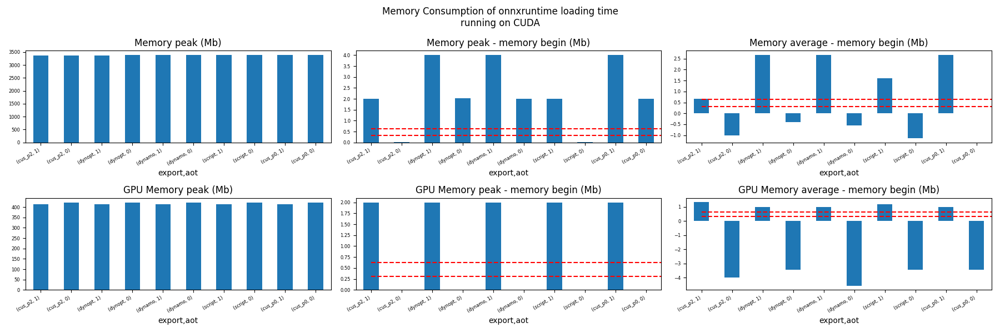
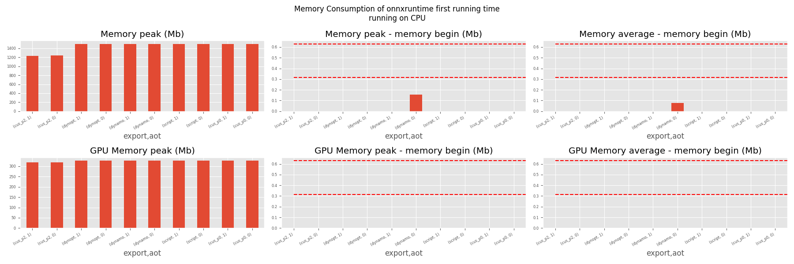
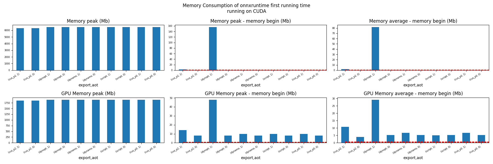
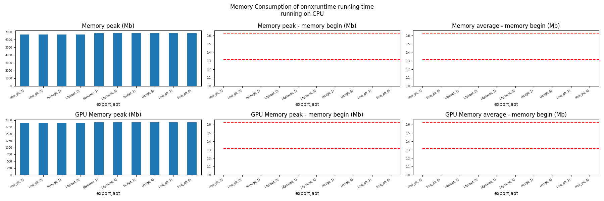
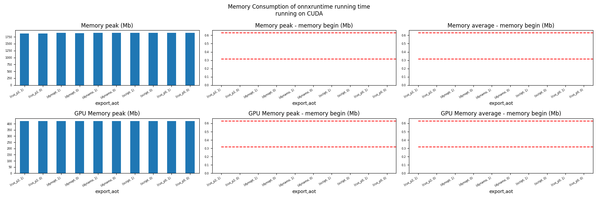

Note
Go to the end to download the full example code.
201: Evaluate different ways to export a torch model to ONNX¶
The example evaluates the performance of onnxruntime of a simple torch model after it was converted into ONNX through different processes:
TorchScript-based ONNX Exporter, let’s call it script
TorchDynamo-based ONNX Exporter, let’s call it dynamo
if available, the previous model but optimized, dynopt
a custom exporter cus_p0, this exporter supports a very limited set of models, as dynamo, it relies on torch.fx but the design is closer to what tensorflow-onnx does.
the same exporter but unused nodes were removed and constants were folded, cus_p2
To run the script:
python _doc/examples/plot_torch_export --help
The script takes around 12 minutes with a larger models.
Some helpers¶
from experimental_experiment.args import get_parsed_args
script_args = get_parsed_args(
"plot_torch_export",
description=__doc__,
scenarios={
"small": "small model to test",
"middle": "55Mb model",
"large": "1Gb model",
},
warmup=5,
repeat=5,
maxtime=(
2,
"maximum time to run a model to measure the computation time, "
"it is 0.1 when scenario is small",
),
expose="scenarios,repeat,warmup",
)
import contextlib
import itertools
import os
import platform
import pprint
import multiprocessing
import time
import cProfile
import pstats
import io
import warnings
import logging
from pstats import SortKey
try:
with warnings.catch_warnings():
warnings.simplefilter("ignore")
import onnxruntime
has_cuda = "CUDAExecutionProvider" in onnxruntime.get_available_providers()
except ImportError:
print("onnxruntime not available.")
import sys
sys.exit(0)
import numpy as np
import matplotlib.pyplot as plt
import pandas
import onnx
from onnx_array_api.profiling import profile2graph
import torch
from torch import nn
import torch.nn.functional as F
import experimental_experiment
from experimental_experiment.torch_interpreter import to_onnx
from experimental_experiment.xbuilder import OptimizationOptions
from experimental_experiment.plotting.memory import memory_peak_plot
from experimental_experiment.ext_test_case import measure_time, get_figure
from experimental_experiment.memory_peak import start_spying_on
from experimental_experiment.ext_test_case import unit_test_going
from experimental_experiment.helpers import pretty_onnx
from tqdm import tqdm
has_cuda = has_cuda and torch.cuda.is_available()
logging.disable(logging.ERROR)
def system_info():
obs = {}
obs["processor"] = platform.processor()
obs["cores"] = multiprocessing.cpu_count()
try:
obs["cuda"] = 1 if torch.cuda.is_available() else 0
obs["cuda_count"] = torch.cuda.device_count()
obs["cuda_name"] = torch.cuda.get_device_name()
obs["cuda_capa"] = torch.cuda.get_device_capability()
except (RuntimeError, AssertionError):
# no cuda
pass
return obs
pprint.pprint(system_info())
{'cores': 20,
'cuda': 1,
'cuda_capa': (8, 9),
'cuda_count': 1,
'cuda_name': 'NVIDIA GeForce RTX 4060 Laptop GPU',
'processor': 'x86_64'}
Scripts arguments
if script_args.scenario in (None, "small"):
script_args.maxtime = 0.1
if unit_test_going():
script_args.warmup = 1
script_args.repeat = 1
script_args.maxtime = 0.1
script_args.scenario = "small"
print(f"scenario={script_args.scenario or 'small'}")
print(f"warmup={script_args.warmup}")
print(f"repeat={script_args.repeat}")
print(f"maxtime={script_args.maxtime}")
scenario=small
warmup=5
repeat=5
maxtime=0.1
The model¶
A simple model to convert.
class MyModelClass(nn.Module):
def __init__(self, scenario=script_args.scenario):
super().__init__()
if scenario == "middle":
self.large = False
self.conv1 = nn.Conv2d(1, 128, 5)
self.conv2 = nn.Conv2d(128, 16, 5)
self.fc1 = nn.Linear(13456, 1024)
self.fcs = []
self.fc2 = nn.Linear(1024, 128)
self.fc3 = nn.Linear(128, 10)
elif scenario in (None, "small"):
self.large = False
self.conv1 = nn.Conv2d(1, 16, 5)
self.conv2 = nn.Conv2d(16, 16, 5)
self.fc1 = nn.Linear(16, 512)
self.fcs = []
self.fc2 = nn.Linear(512, 128)
self.fc3 = nn.Linear(128, 10)
elif scenario in (None, "large"):
self.large = True
self.conv1 = nn.Conv2d(1, 128, 5)
self.conv2 = nn.Conv2d(128, 16, 5)
self.fc1 = nn.Linear(13456, 4096)
# torch script does not support loops.
self.fca = nn.Linear(4096, 4096)
self.fcb = nn.Linear(4096, 4096)
self.fcc = nn.Linear(4096, 4096)
self.fcd = nn.Linear(4096, 4096)
self.fce = nn.Linear(4096, 4096)
self.fcf = nn.Linear(4096, 4096)
self.fcg = nn.Linear(4096, 4096)
self.fch = nn.Linear(4096, 4096)
self.fci = nn.Linear(4096, 4096)
self.fck = nn.Linear(4096, 4096)
self.fcl = nn.Linear(4096, 4096)
self.fcm = nn.Linear(4096, 4096)
self.fcn = nn.Linear(4096, 4096)
# end of the unfolded loop.
self.fc2 = nn.Linear(4096, 128)
self.fc3 = nn.Linear(128, 10)
else:
raise ValueError(f"Unsupported scenario={scenario!r}.")
def forward(self, x):
x = F.max_pool2d(F.relu(self.conv1(x)), (2, 2))
x = F.max_pool2d(F.relu(self.conv2(x)), 2)
x = torch.flatten(x, 1)
x = F.relu(self.fc1(x))
if self.large:
# loop
x = F.relu(self.fca(x))
x = F.relu(self.fcb(x))
x = F.relu(self.fcc(x))
x = F.relu(self.fcd(x))
x = F.relu(self.fce(x))
x = F.relu(self.fcf(x))
x = F.relu(self.fcg(x))
x = F.relu(self.fch(x))
x = F.relu(self.fci(x))
x = F.relu(self.fck(x))
x = F.relu(self.fcl(x))
x = F.relu(self.fcm(x))
x = F.relu(self.fcn(x))
# end of the loop
x = F.relu(self.fc2(x))
x = self.fc3(x)
return x
def create_model_and_input(scenario=script_args.scenario):
if scenario == "middle":
shape = [1, 1, 128, 128]
elif scenario in (None, "small"):
shape = [1, 1, 16, 16]
elif scenario == "large":
shape = [1, 1, 128, 128]
else:
raise ValueError(f"Unsupported scenario={scenario!r}.")
input_tensor = torch.rand(*shape).to(torch.float32)
model = MyModelClass(scenario=scenario)
assert model(input_tensor) is not None
return model, input_tensor
def torch_model_size(model):
size_model = 0
for param in model.parameters():
size = param.numel() * torch.finfo(param.data.dtype).bits / 8
size_model += size
return size_model
model, input_tensor = create_model_and_input()
model_size = torch_model_size(model)
print(f"model size={model_size / 2 ** 20} Mb")
model size=0.31467437744140625 Mb
The exporters¶
def export_script(filename, model, *args):
with contextlib.redirect_stdout(io.StringIO()):
with warnings.catch_warnings():
warnings.simplefilter("ignore")
torch.onnx.export(model, *args, filename, input_names=["input"])
def export_dynamo(filename, model, *args):
with contextlib.redirect_stdout(io.StringIO()):
with warnings.catch_warnings():
warnings.simplefilter("ignore")
export_output = torch.onnx.export(model, args, dynamo=True)
export_output.save(filename)
def export_dynopt(filename, model, *args):
with contextlib.redirect_stdout(io.StringIO()):
with warnings.catch_warnings():
warnings.simplefilter("ignore")
export_output = torch.onnx.export(model, args, dynamo=True)
model_onnx = export_output.model_proto
from experimental_experiment.convert.convert_helper import (
optimize_model_proto_oxs,
)
optimized_model = optimize_model_proto_oxs(model_onnx)
with open(filename, "wb") as f:
f.write(optimized_model.SerializeToString())
def export_cus_p0(filename, model, *args):
onx = to_onnx(model, tuple(args), input_names=["input"])
with open(filename, "wb") as f:
f.write(onx.SerializeToString())
def export_cus_p2(filename, model, *args):
onx = to_onnx(
model,
tuple(args),
input_names=["input"],
options=OptimizationOptions(
remove_unused=True,
constant_folding=True,
),
)
with open(filename, "wb") as f:
f.write(onx.SerializeToString())
Let’s check they are working.
export_functions = [
export_script,
export_dynamo,
export_dynopt,
export_cus_p0,
export_cus_p2,
]
exporters = {f.__name__.replace("export_", ""): f for f in export_functions}
supported_exporters = {}
for k, v in exporters.items():
print(f"run exporter {k}")
filename = f"plot_torch_export_{k}.onnx"
try:
v(filename, model, input_tensor)
except Exception as e:
print(f"skipped due to {str(e)[:1000]}")
continue
supported_exporters[k] = v
print(f"done. size={os.stat(filename).st_size / 2 ** 20:1.0f} Mb")
run exporter script
done. size=0 Mb
run exporter dynamo
done. size=0 Mb
run exporter dynopt
done. size=0 Mb
run exporter cus_p0
done. size=0 Mb
run exporter cus_p2
done. size=0 Mb
Exporter memory¶
def flatten(ps):
obs = ps["cpu"].to_dict(unit=2**20)
if "gpus" in ps:
for i, g in enumerate(ps["gpus"]):
for k, v in g.to_dict(unit=2**20).items():
obs[f"gpu{i}_{k}"] = v
return obs
data = []
for k, v in supported_exporters.items():
print(f"run exporter for memory {k}")
filename = f"plot_torch_export_{k}.onnx"
if has_cuda:
torch.cuda.set_device(0)
stat = start_spying_on(cuda=1 if has_cuda else 0)
v(filename, model, input_tensor)
obs = flatten(stat.stop())
print("done.")
onx = onnx.load(filename)
obs.update(dict(nodes=len(onx.graph.node), export=k))
data.append(obs)
stat = start_spying_on(cuda=1 if has_cuda else 0)
exported_mod = torch.export.export(model, (input_tensor,))
obs = flatten(stat.stop())
obs.update(dict(export="torch.fx"))
data.append(obs)
run exporter for memory script
done.
run exporter for memory dynamo
done.
run exporter for memory dynopt
done.
run exporter for memory cus_p0
done.
run exporter for memory cus_p2
done.
The result.
df1 = pandas.DataFrame(data)
df1.to_csv("plot_torch_export_memory.csv", index=False)
df1.to_excel("plot_torch_export_memory.xlsx", index=False)
print(df1)
ax = memory_peak_plot(
data,
bars=[model_size * i / 2**20 for i in range(1, 5)],
suptitle=f"Memory Consumption of the Export\nmodel size={model_size / 2**20:1.0f} Mb",
)
get_figure(ax).savefig("plot_torch_export_memory.png")
peak mean n begin end gpu0_peak gpu0_mean gpu0_n gpu0_begin gpu0_end nodes export
0 1800.718750 1800.526367 8 1800.500000 1800.718750 215.0 215.0 8 215.0 215.0 12.0 script
1 1803.890625 1801.457241 56 1800.769531 1803.890625 215.0 215.0 56 215.0 215.0 17.0 dynamo
2 1806.394531 1804.149089 54 1804.019531 1806.394531 215.0 215.0 54 215.0 215.0 16.0 dynopt
3 1806.414062 1806.403809 16 1806.394531 1806.414062 215.0 215.0 16 215.0 215.0 15.0 cus_p0
4 1806.449219 1806.421875 14 1806.414062 1806.449219 215.0 215.0 14 215.0 215.0 12.0 cus_p2
5 1806.453125 1806.451022 13 1806.449219 1806.453125 215.0 215.0 13 215.0 215.0 NaN torch.fx
Exporter speed¶
data = []
for k, v in supported_exporters.items():
print(f"run exporter {k}")
filename = f"plot_torch_export_{k}.onnx"
times = []
for _ in range(script_args.repeat):
begin = time.perf_counter()
v(filename, model, input_tensor)
duration = time.perf_counter() - begin
times.append(duration)
onx = onnx.load(filename)
print("done.")
data.append(
dict(
export=k,
time=np.mean(times),
min=min(times),
max=max(times),
first=times[0],
last=times[-1],
std=np.std(times),
nodes=len(onx.graph.node),
)
)
run exporter script
done.
run exporter dynamo
done.
run exporter dynopt
done.
run exporter cus_p0
done.
run exporter cus_p2
done.
The last export to measure time torch spends in export the model before any other export can begin the translation except the first one.
times = []
for _ in range(script_args.repeat):
begin = time.perf_counter()
exported_mod = torch.export.export(model, (input_tensor,))
duration = time.perf_counter() - begin
times.append(duration)
data.append(
dict(
export="torch.fx",
time=np.mean(times),
min=min(times),
max=max(times),
first=times[0],
last=times[-1],
std=np.std(times),
nodes=len(onx.graph.node),
)
)
The result.
df1 = pandas.DataFrame(data)
df1.to_csv("plot_torch_export_time.csv", index=False)
df1.to_excel("plot_torch_export_time.xlsx", index=False)
print(df1)
fig, ax = plt.subplots(1, 1)
dfi = df1[["export", "time", "std"]].set_index("export")
dfi["time"].plot.bar(ax=ax, title="Export time", yerr=dfi["std"], rot=30)
fig.tight_layout()
fig.savefig("plot_torch_export_time.png")
export time min max first last std nodes
0 script 0.056440 0.047584 0.070022 0.047584 0.070022 0.007783 12
1 dynamo 0.519683 0.389736 0.697105 0.697105 0.644939 0.125999 17
2 dynopt 0.538957 0.407901 0.795649 0.407901 0.513448 0.134037 16
3 cus_p0 0.098605 0.089442 0.115178 0.115178 0.098286 0.008934 15
4 cus_p2 0.096076 0.083652 0.115977 0.083652 0.115977 0.011058 12
5 torch.fx 0.085957 0.065235 0.103339 0.075434 0.085217 0.014533 12
Exporter Profiling¶
def clean_text(text):
pathes = [
os.path.abspath(os.path.normpath(os.path.join(os.path.dirname(torch.__file__), ".."))),
os.path.abspath(os.path.normpath(os.path.join(os.path.dirname(onnx.__file__), ".."))),
os.path.abspath(
os.path.normpath(
os.path.join(os.path.dirname(experimental_experiment.__file__), "..")
)
),
]
for p in pathes:
text = text.replace(p, "")
text = text.replace("experimental_experiment", "experimental_experiment".upper())
return text
def profile_function(name, export_function, verbose=False):
print(f"profile {name}: {export_function}")
pr = cProfile.Profile()
pr.enable()
for _ in range(script_args.repeat):
export_function("dummyc.onnx", model, input_tensor)
pr.disable()
s = io.StringIO()
sortby = SortKey.CUMULATIVE
ps = pstats.Stats(pr, stream=s).sort_stats(sortby)
ps.print_stats()
raw = s.getvalue()
text = "\n".join(raw.split("\n")[:200])
if verbose:
print(text)
with open(f"plot_torch_export_profile_{name}.txt", "w") as f:
f.write(raw)
root, nodes = profile2graph(ps, clean_text=clean_text)
text = root.to_text()
with open(f"plot_torch_export_profile_{name}_h.txt", "w") as f:
f.write(text)
print("done.")
profile_function("custom0", export_cus_p0, True)
profile_function("custom2", export_cus_p2)
profile custom0: <function export_cus_p0 at 0x7f497e5005e0>
1079658 function calls (1048616 primitive calls) in 1.026 seconds
Ordered by: cumulative time
ncalls tottime percall cumtime percall filename:lineno(function)
60 0.001 0.000 1.068 0.018 /home/xadupre/vv/this312/lib/python3.12/site-packages/torch/_dynamo/symbolic_convert.py:901(call_function)
25 0.001 0.000 1.013 0.041 /home/xadupre/vv/this312/lib/python3.12/site-packages/torch/_dynamo/variables/nn_module.py:343(call_function)
1080/690 0.002 0.000 0.228 0.000 /home/xadupre/vv/this312/lib/python3.12/site-packages/torch/utils/_stats.py:21(wrapper)
65 0.000 0.000 0.187 0.003 /home/xadupre/vv/this312/lib/python3.12/site-packages/torch/_dynamo/variables/builder.py:2149(wrap_fx_proxy)
65 0.000 0.000 0.186 0.003 /home/xadupre/vv/this312/lib/python3.12/site-packages/torch/_dynamo/variables/builder.py:2222(wrap_fx_proxy_cls)
90 0.001 0.000 0.184 0.002 /home/xadupre/vv/this312/lib/python3.12/site-packages/torch/_dynamo/utils.py:2347(wrap_fake_exception)
60 0.001 0.000 0.184 0.003 /home/xadupre/vv/this312/lib/python3.12/site-packages/torch/_dynamo/variables/builder.py:2306(_wrap_fx_proxy)
60 0.001 0.000 0.175 0.003 /home/xadupre/vv/this312/lib/python3.12/site-packages/torch/_dynamo/utils.py:2743(get_fake_value)
870 0.002 0.000 0.173 0.000 /home/xadupre/vv/this312/lib/python3.12/site-packages/torch/_subclasses/fake_tensor.py:1263(__torch_dispatch__)
280/53 0.002 0.000 0.172 0.003 /home/xadupre/vv/this312/lib/python3.12/site-packages/torch/_dynamo/symbolic_convert.py:958(step)
870 0.011 0.000 0.170 0.000 /home/xadupre/vv/this312/lib/python3.12/site-packages/torch/_subclasses/fake_tensor.py:1788(dispatch)
55/11 0.003 0.000 0.167 0.015 /home/xadupre/vv/this312/lib/python3.12/site-packages/torch/_dynamo/symbolic_convert.py:676(wrapper)
55/11 0.000 0.000 0.164 0.015 /home/xadupre/vv/this312/lib/python3.12/site-packages/torch/_dynamo/symbolic_convert.py:2374(CALL)
55/11 0.000 0.000 0.164 0.015 /home/xadupre/vv/this312/lib/python3.12/site-packages/torch/_dynamo/symbolic_convert.py:2333(_call)
485 0.004 0.000 0.156 0.000 /home/xadupre/vv/this312/lib/python3.12/site-packages/torch/_subclasses/fake_tensor.py:1348(_cached_dispatch_impl)
5 0.001 0.000 0.150 0.030 /home/xadupre/github/experimental-experiment/experimental_experiment/xbuilder/graph_builder.py:4583(to_onnx)
50 0.001 0.000 0.136 0.003 /home/xadupre/vv/this312/lib/python3.12/site-packages/torch/nn/parameter.py:63(__deepcopy__)
160/110 0.044 0.000 0.132 0.001 {method 'clone' of 'torch._C.TensorBase' objects}
5250/2080 0.013 0.000 0.116 0.000 /usr/lib/python3.12/copy.py:118(deepcopy)
435/325 0.000 0.000 0.115 0.000 /home/xadupre/vv/this312/lib/python3.12/site-packages/torch/_ops.py:757(__call__)
55/10 0.000 0.000 0.115 0.012 /home/xadupre/vv/this312/lib/python3.12/site-packages/torch/fx/experimental/symbolic_shapes.py:6820(run_node)
25 0.000 0.000 0.114 0.005 /home/xadupre/vv/this312/lib/python3.12/site-packages/torch/_dynamo/utils.py:2358(deepcopy_to_fake_tensor)
610/250 0.002 0.000 0.112 0.000 /usr/lib/python3.12/copy.py:247(_reconstruct)
1260 0.003 0.000 0.111 0.000 /home/xadupre/vv/this312/lib/python3.12/site-packages/torch/fx/experimental/proxy_tensor.py:1235(__torch_function__)
255/120 0.001 0.000 0.108 0.001 /usr/lib/python3.12/copy.py:217(_deepcopy_dict)
1260 0.001 0.000 0.106 0.000 /home/xadupre/vv/this312/lib/python3.12/site-packages/torch/fx/experimental/proxy_tensor.py:1264(__torch_function__)
25 0.000 0.000 0.106 0.004 /home/xadupre/vv/this312/lib/python3.12/site-packages/torch/_dynamo/utils.py:2360(<lambda>)
60 0.001 0.000 0.104 0.002 /home/xadupre/vv/this312/lib/python3.12/site-packages/torch/_ops.py:865(handler)
70 0.000 0.000 0.102 0.001 /home/xadupre/vv/this312/lib/python3.12/site-packages/torch/fx/graph.py:1569(python_code)
60 0.005 0.000 0.102 0.002 /home/xadupre/vv/this312/lib/python3.12/site-packages/torch/_library/utils.py:280(handle_dispatch_mode)
60 0.000 0.000 0.095 0.002 /home/xadupre/vv/this312/lib/python3.12/site-packages/torch/fx/experimental/proxy_tensor.py:1333(__torch_dispatch__)
60 0.002 0.000 0.095 0.002 /home/xadupre/vv/this312/lib/python3.12/site-packages/torch/fx/experimental/proxy_tensor.py:766(proxy_call)
60 0.001 0.000 0.092 0.002 /home/xadupre/vv/this312/lib/python3.12/site-packages/torch/fx/graph_module.py:794(recompile)
5 0.000 0.000 0.088 0.018 /home/xadupre/github/experimental-experiment/experimental_experiment/xbuilder/graph_builder.py:5070(optimize)
70 0.000 0.000 0.086 0.001 /home/xadupre/vv/this312/lib/python3.12/site-packages/torch/fx/graph.py:1646(_python_code)
250 0.001 0.000 0.086 0.000 /home/xadupre/vv/this312/lib/python3.12/site-packages/torch/_subclasses/fake_tensor.py:2695(__torch_function__)
70 0.009 0.000 0.086 0.001 /home/xadupre/vv/this312/lib/python3.12/site-packages/torch/fx/graph.py:408(_gen_python_code)
5 0.000 0.000 0.084 0.017 /home/xadupre/github/experimental-experiment/experimental_experiment/xbuilder/graph_builder.py:5359(optimize_with_patterns)
5 0.005 0.001 0.083 0.017 /home/xadupre/github/experimental-experiment/experimental_experiment/xoptim/graph_builder_optim.py:1049(optimize)
485 0.002 0.000 0.077 0.000 /home/xadupre/vv/this312/lib/python3.12/site-packages/torch/_subclasses/fake_tensor.py:1722(_output_from_cache_entry)
515 0.009 0.000 0.075 0.000 /home/xadupre/vv/this312/lib/python3.12/site-packages/torch/_subclasses/fake_tensor.py:1656(_get_output_tensor_from_cache_entry)
7785/7495 0.005 0.000 0.074 0.000 {built-in method builtins.next}
135/26 0.001 0.000 0.073 0.003 /home/xadupre/vv/this312/lib/python3.12/site-packages/torch/fx/interpreter.py:212(run_node)
485 0.002 0.000 0.072 0.000 /home/xadupre/vv/this312/lib/python3.12/site-packages/torch/_subclasses/fake_tensor.py:1391(_cache_key)
2070/535 0.010 0.000 0.067 0.000 /home/xadupre/vv/this312/lib/python3.12/site-packages/torch/_subclasses/fake_tensor.py:1467(_prep_args_for_hash)
150 0.001 0.000 0.061 0.000 /home/xadupre/vv/this312/lib/python3.12/site-packages/torch/_subclasses/fake_tensor.py:764(__torch_dispatch__)
45 0.000 0.000 0.060 0.001 /home/xadupre/vv/this312/lib/python3.12/site-packages/torch/nn/modules/linear.py:124(forward)
75/45 0.004 0.000 0.060 0.001 {built-in method torch._C._nn.linear}
1090 0.016 0.000 0.059 0.000 /home/xadupre/github/experimental-experiment/experimental_experiment/xoptim/patterns_api.py:128(enumerate_matches)
25 0.000 0.000 0.058 0.002 /home/xadupre/vv/this312/lib/python3.12/site-packages/torch/fx/_symbolic_trace.py:811(module_call_wrapper)
50 0.000 0.000 0.058 0.001 /home/xadupre/vv/this312/lib/python3.12/site-packages/torch/fx/_symbolic_trace.py:490(call_module)
25 0.000 0.000 0.058 0.002 /home/xadupre/vv/this312/lib/python3.12/site-packages/torch/fx/experimental/proxy_tensor.py:1745(call_module)
35 0.000 0.000 0.058 0.002 /home/xadupre/vv/this312/lib/python3.12/site-packages/torch/fx/interpreter.py:290(call_function)
20/4 0.001 0.000 0.057 0.014 /home/xadupre/vv/this312/lib/python3.12/site-packages/torch/fx/interpreter.py:336(call_module)
100/60 0.000 0.000 0.056 0.001 /home/xadupre/vv/this312/lib/python3.12/site-packages/torch/nn/functional.py:1693(relu)
60 0.000 0.000 0.055 0.001 /home/xadupre/vv/this312/lib/python3.12/site-packages/torch/_dynamo/utils.py:2804(<lambda>)
60 0.000 0.000 0.055 0.001 /home/xadupre/vv/this312/lib/python3.12/site-packages/torch/_dynamo/utils.py:2894(run_node)
60 0.002 0.000 0.055 0.001 {built-in method torch.relu}
25 0.000 0.000 0.054 0.002 /home/xadupre/vv/this312/lib/python3.12/site-packages/torch/fx/_symbolic_trace.py:813(forward)
35 0.001 0.000 0.050 0.001 /home/xadupre/vv/this312/lib/python3.12/site-packages/torch/_dynamo/variables/torch.py:878(call_function)
5 0.001 0.000 0.049 0.010 /home/xadupre/github/experimental-experiment/experimental_experiment/xbuilder/graph_builder.py:4060(_build_initializers)
3725/3580 0.002 0.000 0.047 0.000 /usr/lib/python3.12/contextlib.py:132(__enter__)
60/30 0.000 0.000 0.047 0.002 /home/xadupre/vv/this312/lib/python3.12/site-packages/torch/overrides.py:1669(handle_torch_function)
50 0.001 0.000 0.046 0.001 /home/xadupre/github/experimental-experiment/experimental_experiment/mini_onnx_builder.py:108(proto_from_array)
50 0.000 0.000 0.046 0.001 /home/xadupre/vv/this312/lib/python3.12/site-packages/torch/nn/parameter.py:40(__new__)
175/125 0.002 0.000 0.046 0.000 {method 'detach' of 'torch._C.TensorBase' objects}
5 0.000 0.000 0.045 0.009 /home/xadupre/vv/this312/lib/python3.12/site-packages/torch/_dynamo/symbolic_convert.py:3085(RETURN_VALUE)
5 0.000 0.000 0.045 0.009 /home/xadupre/vv/this312/lib/python3.12/site-packages/torch/_dynamo/symbolic_convert.py:3057(_return)
5 0.000 0.000 0.045 0.009 /home/xadupre/vv/this312/lib/python3.12/site-packages/torch/_dynamo/output_graph.py:964(compile_subgraph)
5 0.000 0.000 0.045 0.009 /home/xadupre/vv/this312/lib/python3.12/site-packages/torch/_dynamo/symbolic_convert.py:2726(__init__)
10 0.000 0.000 0.044 0.004 /home/xadupre/vv/this312/lib/python3.12/site-packages/torch/_dynamo/variables/lazy.py:64(realize)
110 0.000 0.000 0.043 0.000 /home/xadupre/vv/this312/lib/python3.12/site-packages/torch/_dynamo/variables/base.py:444(build)
110 0.001 0.000 0.043 0.000 /home/xadupre/vv/this312/lib/python3.12/site-packages/torch/_dynamo/variables/builder.py:374(__call__)
5 0.000 0.000 0.042 0.008 /home/xadupre/vv/this312/lib/python3.12/site-packages/torch/export/_trace.py:420(_produce_aten_artifact)
1330 0.013 0.000 0.042 0.000 /home/xadupre/vv/this312/lib/python3.12/site-packages/torch/fx/graph.py:634(emit_node)
5 0.000 0.000 0.042 0.008 /home/xadupre/vv/this312/lib/python3.12/site-packages/torch/_dynamo/output_graph.py:1306(compile_and_call_fx_graph)
55/5 0.001 0.000 0.041 0.008 /home/xadupre/vv/this312/lib/python3.12/site-packages/torch/_dynamo/variables/lazy.py:107(realize_all)
65 0.002 0.000 0.040 0.001 /home/xadupre/vv/this312/lib/python3.12/site-packages/torch/_dynamo/variables/builder.py:519(_wrap)
5 0.000 0.000 0.040 0.008 /home/xadupre/github/experimental-experiment/experimental_experiment/xbuilder/graph_builder.py:4494(process)
198900/196380 0.034 0.000 0.040 0.000 {built-in method builtins.isinstance}
105 0.001 0.000 0.040 0.000 /home/xadupre/vv/this312/lib/python3.12/site-packages/torch/_subclasses/meta_utils.py:836(meta_tensor)
120 0.001 0.000 0.039 0.000 /home/xadupre/github/experimental-experiment/experimental_experiment/torch_interpreter/interpreter.py:178(run_node)
25 0.001 0.000 0.039 0.002 /home/xadupre/vv/this312/lib/python3.12/site-packages/torch/fx/graph_module.py:437(__init__)
590/520 0.002 0.000 0.038 0.000 /home/xadupre/vv/this312/lib/python3.12/site-packages/torch/nn/modules/module.py:1932(__setattr__)
5 0.000 0.000 0.038 0.008 /home/xadupre/vv/this312/lib/python3.12/site-packages/torch/_functorch/functional_call.py:10(functional_call)
5 0.000 0.000 0.038 0.008 /home/xadupre/vv/this312/lib/python3.12/site-packages/torch/nn/utils/stateless.py:246(_functional_call)
5 0.000 0.000 0.036 0.007 /home/xadupre/vv/this312/lib/python3.12/site-packages/torch/fx/_lazy_graph_module.py:115(_lazy_forward)
5 0.000 0.000 0.036 0.007 /home/xadupre/vv/this312/lib/python3.12/site-packages/torch/_dynamo/guards.py:1801(SHAPE_ENV)
5 0.033 0.007 0.036 0.007 /home/xadupre/vv/this312/lib/python3.12/site-packages/torch/_dynamo/guards.py:1224(add_python_lambda_leaf_guard_to_root)
105 0.002 0.000 0.035 0.000 /home/xadupre/vv/this312/lib/python3.12/site-packages/torch/autograd/grad_mode.py:273(__exit__)
30 0.000 0.000 0.035 0.001 /home/xadupre/vv/this312/lib/python3.12/site-packages/torch/nn/modules/conv.py:553(forward)
30 0.000 0.000 0.035 0.001 /home/xadupre/vv/this312/lib/python3.12/site-packages/torch/nn/modules/conv.py:536(_conv_forward)
50/30 0.003 0.000 0.035 0.001 {built-in method torch.conv2d}
240 0.001 0.000 0.034 0.000 /home/xadupre/vv/this312/lib/python3.12/site-packages/torch/fx/proxy.py:209(create_proxy)
25 0.000 0.000 0.034 0.001 /home/xadupre/vv/this312/lib/python3.12/site-packages/torch/fx/graph_module.py:550(graph)
10 0.000 0.000 0.032 0.003 /home/xadupre/vv/this312/lib/python3.12/site-packages/torch/_dynamo/variables/lazy.py:22(realize)
5 0.000 0.000 0.031 0.006 /home/xadupre/vv/this312/lib/python3.12/site-packages/torch/_dynamo/guards.py:2562(build_guard_function)
3725/3580 0.002 0.000 0.030 0.000 /usr/lib/python3.12/contextlib.py:141(__exit__)
5 0.000 0.000 0.030 0.006 /home/xadupre/vv/this312/lib/python3.12/site-packages/torch/fx/graph_module.py:823(call_wrapped)
5 0.000 0.000 0.030 0.006 /home/xadupre/vv/this312/lib/python3.12/site-packages/torch/fx/graph_module.py:382(__call__)
635 0.009 0.000 0.029 0.000 /home/xadupre/vv/this312/lib/python3.12/site-packages/torch/_subclasses/fake_tensor.py:954(_flatten_into)
60 0.001 0.000 0.029 0.000 /home/xadupre/github/experimental-experiment/experimental_experiment/torch_interpreter/interpreter.py:1358(call_function)
50/30 0.000 0.000 0.029 0.001 /home/xadupre/vv/this312/lib/python3.12/site-packages/torch/_jit_internal.py:614(fn)
50/30 0.000 0.000 0.029 0.001 /home/xadupre/vv/this312/lib/python3.12/site-packages/torch/nn/functional.py:807(_max_pool2d)
30 0.002 0.000 0.028 0.001 {built-in method torch.max_pool2d}
635 0.007 0.000 0.028 0.000 /home/xadupre/vv/this312/lib/python3.12/site-packages/torch/_subclasses/fake_tensor.py:974(extract_tensor_metadata)
735 0.008 0.000 0.027 0.000 /home/xadupre/vv/this312/lib/python3.12/site-packages/torch/_subclasses/fake_tensor.py:678(__new__)
190 0.001 0.000 0.027 0.000 /home/xadupre/github/experimental-experiment/experimental_experiment/xbuilder/graph_builder_opset.py:113(make_node)
10 0.000 0.000 0.027 0.003 /home/xadupre/vv/this312/lib/python3.12/site-packages/torch/fx/graph_module.py:913(print_readable)
10 0.000 0.000 0.027 0.003 /home/xadupre/vv/this312/lib/python3.12/site-packages/torch/fx/graph_module.py:297(_print_readable)
210 0.004 0.000 0.027 0.000 /home/xadupre/github/experimental-experiment/experimental_experiment/xbuilder/graph_builder.py:3399(make_node)
5 0.000 0.000 0.026 0.005 /home/xadupre/vv/this312/lib/python3.12/site-packages/torch/_dynamo/eval_frame.py:1175(rewrite_signature)
2920/135 0.003 0.000 0.026 0.000 /usr/lib/python3.12/ast.py:403(visit)
250 0.002 0.000 0.025 0.000 /home/xadupre/vv/this312/lib/python3.12/site-packages/torch/fx/proxy.py:143(create_node)
65 0.000 0.000 0.024 0.000 /home/xadupre/vv/this312/lib/python3.12/site-packages/torch/fx/experimental/proxy_tensor.py:598(track_tensor_tree)
120/65 0.000 0.000 0.023 0.000 /home/xadupre/vv/this312/lib/python3.12/site-packages/torch/fx/experimental/proxy_tensor.py:620(wrap_with_proxy)
5 0.000 0.000 0.023 0.005 /home/xadupre/vv/this312/lib/python3.12/site-packages/torch/_dynamo/metrics_context.py:37(__exit__)
5 0.000 0.000 0.023 0.005 /home/xadupre/vv/this312/lib/python3.12/site-packages/torch/_dynamo/utils.py:1255(record_compilation_metrics)
105 0.004 0.000 0.023 0.000 /home/xadupre/vv/this312/lib/python3.12/site-packages/torch/autograd/grad_mode.py:269(__enter__)
5 0.000 0.000 0.022 0.004 /home/xadupre/vv/this312/lib/python3.12/site-packages/torch/_dynamo/variables/builder.py:1535(wrap_tensor)
5 0.001 0.000 0.021 0.004 /home/xadupre/vv/this312/lib/python3.12/site-packages/torch/_dynamo/utils.py:1211(_scrubbed_inductor_config_for_logging)
8495/5035 0.012 0.000 0.021 0.000 /home/xadupre/vv/this312/lib/python3.12/site-packages/torch/fx/node.py:906(map_aggregate)
260 0.001 0.000 0.021 0.000 /home/xadupre/vv/this312/lib/python3.12/site-packages/torch/fx/graph.py:1111(create_node)
4910 0.008 0.000 0.021 0.000 /home/xadupre/vv/this312/lib/python3.12/site-packages/torch/fx/node.py:876(__setattr__)
4365 0.005 0.000 0.020 0.000 /home/xadupre/vv/this312/lib/python3.12/site-packages/torch/_subclasses/meta_utils.py:177(is_sparse_any)
5 0.000 0.000 0.020 0.004 /home/xadupre/vv/this312/lib/python3.12/site-packages/torch/_dynamo/output_graph.py:1371(<lambda>)
4480 0.003 0.000 0.020 0.000 /home/xadupre/vv/this312/lib/python3.12/site-packages/torch/fx/node.py:897(map_arg)
10 0.000 0.000 0.020 0.002 /home/xadupre/vv/this312/lib/python3.12/site-packages/torch/_export/passes/replace_with_hop_pass_util.py:157(_replace_with_hop_pass_helper)
65 0.000 0.000 0.019 0.000 /home/xadupre/vv/this312/lib/python3.12/site-packages/torch/_dynamo/symbolic_convert.py:1822(LOAD_ATTR)
960 0.001 0.000 0.019 0.000 /home/xadupre/github/experimental-experiment/experimental_experiment/xoptim/patterns_api.py:968(match)
65 0.000 0.000 0.018 0.000 /home/xadupre/vv/this312/lib/python3.12/site-packages/torch/_dynamo/symbolic_convert.py:1815(_load_attr)
60 0.000 0.000 0.018 0.000 /home/xadupre/vv/this312/lib/python3.12/site-packages/torch/_dynamo/symbolic_convert.py:1792(LOAD_METHOD)
5 0.000 0.000 0.018 0.004 /home/xadupre/vv/this312/lib/python3.12/site-packages/torch/_dynamo/eval_frame.py:1112(transform)
5 0.000 0.000 0.018 0.004 /home/xadupre/vv/this312/lib/python3.12/site-packages/torch/fx/interpreter.py:565(transform)
360 0.000 0.000 0.018 0.000 /home/xadupre/vv/this312/lib/python3.12/site-packages/torch/_dynamo/guards.py:443(_ast_unparse)
960 0.001 0.000 0.018 0.000 /home/xadupre/github/experimental-experiment/experimental_experiment/xoptim/patterns_api.py:355(_get_match_pattern)
15 0.000 0.000 0.018 0.001 /home/xadupre/vv/this312/lib/python3.12/site-packages/torch/fx/_lazy_graph_module.py:57(_make_graph_module)
360 0.000 0.000 0.017 0.000 /usr/lib/python3.12/ast.py:1789(unparse)
105 0.000 0.000 0.017 0.000 /home/xadupre/vv/this312/lib/python3.12/site-packages/torch/_dynamo/guards.py:1221(get_guard_manager)
65 0.002 0.000 0.017 0.000 /home/xadupre/vv/this312/lib/python3.12/site-packages/torch/_dynamo/output_graph.py:1984(create_proxy)
65 0.000 0.000 0.017 0.000 /home/xadupre/vv/this312/lib/python3.12/site-packages/torch/_dynamo/variables/builtin.py:986(call_function)
360 0.000 0.000 0.017 0.000 /usr/lib/python3.12/ast.py:855(visit)
1655/1585 0.007 0.000 0.017 0.000 /home/xadupre/vv/this312/lib/python3.12/site-packages/torch/fx/experimental/recording.py:238(wrapper)
65 0.000 0.000 0.017 0.000 /home/xadupre/vv/this312/lib/python3.12/site-packages/torch/_dynamo/variables/builtin.py:849(builtin_dispatch)
115 0.001 0.000 0.016 0.000 /home/xadupre/vv/this312/lib/python3.12/site-packages/torch/fx/experimental/proxy_tensor.py:491(set_meta)
65 0.000 0.000 0.016 0.000 /home/xadupre/vv/this312/lib/python3.12/site-packages/torch/_dynamo/variables/builtin.py:769(call_self_handler)
1845/360 0.003 0.000 0.016 0.000 /usr/lib/python3.12/ast.py:845(traverse)
65 0.001 0.000 0.016 0.000 /home/xadupre/vv/this312/lib/python3.12/site-packages/torch/_dynamo/variables/builtin.py:1637(call_getattr)
10 0.000 0.000 0.016 0.002 /home/xadupre/github/experimental-experiment/experimental_experiment/xoptim/patterns_api.py:305(_build_pattern)
1570 0.002 0.000 0.016 0.000 /home/xadupre/vv/this312/lib/python3.12/site-packages/torch/fx/experimental/symbolic_shapes.py:3005(_suppress_guards)
105 0.004 0.000 0.016 0.000 /home/xadupre/vv/this312/lib/python3.12/site-packages/torch/_subclasses/meta_utils.py:260(describe_tensor)
60 0.000 0.000 0.015 0.000 /home/xadupre/vv/this312/lib/python3.12/site-packages/torch/_dynamo/output_graph.py:583(create_proxy)
3960 0.002 0.000 0.015 0.000 /usr/lib/python3.12/re/__init__.py:174(search)
5 0.000 0.000 0.015 0.003 /home/xadupre/vv/this312/lib/python3.12/site-packages/torch/_dynamo/variables/builder.py:2816(wrap_to_fake_tensor_and_record)
36825 0.011 0.000 0.015 0.000 {built-in method builtins.getattr}
210/105 0.003 0.000 0.015 0.000 /home/xadupre/vv/this312/lib/python3.12/site-packages/torch/_dynamo/guards.py:914(get_guard_manager_from_source)
150 0.015 0.000 0.015 0.000 {built-in method builtins.compile}
5 0.000 0.000 0.015 0.003 /home/xadupre/vv/this312/lib/python3.12/site-packages/torch/_dynamo/guards.py:2172(count)
5 0.000 0.000 0.015 0.003 /home/xadupre/vv/this312/lib/python3.12/site-packages/torch/_dynamo/variables/builder.py:2853(<lambda>)
60 0.000 0.000 0.015 0.000 /home/xadupre/vv/this312/lib/python3.12/site-packages/torch/fx/graph_module.py:91(_forward_from_src)
60 0.000 0.000 0.015 0.000 /home/xadupre/vv/this312/lib/python3.12/site-packages/torch/fx/graph_module.py:97(_method_from_src)
60 0.000 0.000 0.014 0.000 /home/xadupre/vv/this312/lib/python3.12/site-packages/torch/fx/graph_module.py:86(_exec_with_source)
6300 0.003 0.000 0.014 0.000 {built-in method builtins.repr}
2940 0.008 0.000 0.014 0.000 /home/xadupre/vv/this312/lib/python3.12/site-packages/torch/_subclasses/fake_tensor.py:597(__set__)
140 0.002 0.000 0.014 0.000 /home/xadupre/vv/this312/lib/python3.12/site-packages/torch/fx/graph.py:1623(override_node_repr)
705/45 0.002 0.000 0.014 0.000 /home/xadupre/vv/this312/lib/python3.12/site-packages/torch/_dynamo/guards.py:2119(visit)
45 0.000 0.000 0.014 0.000 /home/xadupre/vv/this312/lib/python3.12/site-packages/torch/_dynamo/guards.py:2568(replace)
45 0.000 0.000 0.014 0.000 /home/xadupre/vv/this312/lib/python3.12/site-packages/torch/_dynamo/guards.py:2181(replace)
705/45 0.001 0.000 0.014 0.000 /usr/lib/python3.12/ast.py:409(generic_visit)
120 0.001 0.000 0.014 0.000 /home/xadupre/vv/this312/lib/python3.12/site-packages/torch/fx/experimental/proxy_tensor.py:1781(create_node)
4560 0.007 0.000 0.013 0.000 /home/xadupre/vv/this312/lib/python3.12/site-packages/torch/fx/graph.py:154(create_name)
4810/4705 0.004 0.000 0.012 0.000 {method 'join' of 'str' objects}
85 0.004 0.000 0.012 0.000 /home/xadupre/vv/this312/lib/python3.12/site-packages/torch/_dynamo/guards.py:763(getitem_on_dict_mgr)
5 0.000 0.000 0.012 0.002 /home/xadupre/vv/this312/lib/python3.12/site-packages/torch/export/exported_program.py:839(__init__)
3960 0.011 0.000 0.011 0.000 {method 'search' of 're.Pattern' objects}
840 0.001 0.000 0.011 0.000 /home/xadupre/vv/this312/lib/python3.12/site-packages/torch/fx/graph.py:555(_format_args)
4320 0.002 0.000 0.011 0.000 /home/xadupre/vv/this312/lib/python3.12/site-packages/torch/fx/node.py:605(__repr__)
10 0.000 0.000 0.011 0.001 /home/xadupre/vv/this312/lib/python3.12/site-packages/torch/utils/_config_module.py:545(get_config_copy)
10 0.001 0.000 0.011 0.001 /home/xadupre/vv/this312/lib/python3.12/site-packages/torch/utils/_config_module.py:433(_get_dict)
5 0.000 0.000 0.011 0.002 /home/xadupre/github/experimental-experiment/experimental_experiment/torch_interpreter/_aten_functions.py:2908(aten_flatten_using_ints)
30 0.000 0.000 0.011 0.000 /home/xadupre/vv/this312/lib/python3.12/site-packages/torch/_dynamo/variables/builder.py:1412(wrap_module)
5 0.000 0.000 0.011 0.002 /home/xadupre/vv/this312/lib/python3.12/site-packages/torch/_export/utils.py:537(apply_runtime_assertion_pass)
115 0.000 0.000 0.010 0.000 /home/xadupre/vv/this312/lib/python3.12/site-packages/torch/fx/experimental/proxy_tensor.py:391(extract_val)
455/45 0.001 0.000 0.010 0.000 /home/xadupre/vv/this312/lib/python3.12/site-packages/torch/_dynamo/guards.py:2135(visit)
115 0.000 0.000 0.010 0.000 /home/xadupre/vv/this312/lib/python3.12/site-packages/torch/fx/experimental/proxy_tensor.py:365(snapshot_fake)
415/45 0.001 0.000 0.010 0.000 /usr/lib/python3.12/ast.py:477(generic_visit)
5 0.000 0.000 0.010 0.002 /home/xadupre/vv/this312/lib/python3.12/site-packages/torch/_export/passes/replace_set_grad_with_hop_pass.py:110(replace_set_grad_with_hop_pass)
115 0.001 0.000 0.010 0.000 /home/xadupre/vv/this312/lib/python3.12/site-packages/torch/_subclasses/fake_impls.py:991(fast_detach)
30 0.000 0.000 0.010 0.000 /home/xadupre/vv/this312/lib/python3.12/site-packages/torch/_dynamo/variables/nn_module.py:250(var_getattr)
25/15 0.001 0.000 0.010 0.001 {built-in method torch.flatten}
5 0.000 0.000 0.010 0.002 /home/xadupre/vv/this312/lib/python3.12/site-packages/torch/_export/utils.py:777(placeholder_naming_pass)
415/335 0.001 0.000 0.010 0.000 /usr/lib/python3.12/ast.py:1573(visit_Subscript)
65 0.001 0.000 0.010 0.000 /home/xadupre/vv/this312/lib/python3.12/site-packages/torch/_dynamo/variables/builder.py:2330(handle_traced_output)
3725 0.003 0.000 0.010 0.000 /usr/lib/python3.12/contextlib.py:299(helper)
915 0.009 0.000 0.010 0.000 {built-in method builtins.eval}
done.
profile custom2: <function export_cus_p2 at 0x7f497e500680>
done.
Same with dynamo-exporter.
profile_function("dynamo", export_dynamo, verbose=True)
if "dynopt" in supported_exporters:
profile_function("dynopt", export_dynopt)
profile dynamo: <function export_dynamo at 0x7f497e5004a0>
7919789 function calls (7793126 primitive calls) in 5.330 seconds
Ordered by: cumulative time
ncalls tottime percall cumtime percall filename:lineno(function)
5 0.022 0.004 2.124 0.425 /home/xadupre/vv/this312/lib/python3.12/site-packages/torch/onnx/_internal/exporter/_registration.py:115(from_torchlib)
122570/121490 0.030 0.000 1.319 0.000 {built-in method builtins.next}
5 0.025 0.005 1.314 0.263 /home/xadupre/github/onnxscript/onnxscript/_framework_apis/torch_2_5.py:99(get_torchlib_ops)
940 0.008 0.000 1.282 0.001 /home/xadupre/github/onnxscript/onnxscript/values.py:640(function_ir)
5010/4475 0.003 0.000 1.245 0.000 /usr/lib/python3.12/contextlib.py:132(__enter__)
20 0.104 0.005 1.189 0.059 /home/xadupre/vv/this312/lib/python3.12/site-packages/torch/export/exported_program.py:195(_override_composite_implicit_decomp)
63085 0.773 0.000 0.826 0.000 /home/xadupre/vv/this312/lib/python3.12/site-packages/torch/_ops.py:131(inner)
2880 0.055 0.000 0.694 0.000 /home/xadupre/vv/this312/lib/python3.12/site-packages/torch/onnx/_internal/exporter/_schemas.py:431(from_function)
10 0.001 0.000 0.673 0.067 /home/xadupre/vv/this312/lib/python3.12/site-packages/torch/_export/utils.py:1091(_collect_all_valid_cia_ops)
210 0.007 0.000 0.673 0.003 /home/xadupre/vv/this312/lib/python3.12/site-packages/torch/_export/utils.py:1074(_collect_all_valid_cia_ops_for_namespace)
210 0.237 0.001 0.622 0.003 /home/xadupre/vv/this312/lib/python3.12/site-packages/torch/_export/utils.py:1009(_materialize_cpp_cia_ops)
940 0.005 0.000 0.509 0.001 /home/xadupre/github/onnxscript/onnxscript/_internal/ast_utils.py:16(get_src_and_ast)
35/5 0.001 0.000 0.443 0.089 /home/xadupre/vv/this312/lib/python3.12/site-packages/torch/_subclasses/fake_tensor.py:2594(from_tensor)
100/5 0.001 0.000 0.443 0.089 /home/xadupre/vv/this312/lib/python3.12/site-packages/torch/_subclasses/fake_tensor.py:331(from_real_tensor)
105/5 0.002 0.000 0.440 0.088 /home/xadupre/vv/this312/lib/python3.12/site-packages/torch/_subclasses/meta_utils.py:1794(__call__)
940 0.002 0.000 0.400 0.000 /home/xadupre/github/onnxscript/onnxscript/converter.py:1466(translate_function_signature)
5 0.005 0.001 0.397 0.079 /home/xadupre/vv/this312/lib/python3.12/site-packages/torch/export/exported_program.py:302(_split_decomp_table_to_cia_and_python_decomp)
940 0.027 0.000 0.396 0.000 /home/xadupre/github/onnxscript/onnxscript/converter.py:1381(_translate_function_signature_common)
80/20 0.000 0.000 0.394 0.020 /home/xadupre/vv/this312/lib/python3.12/site-packages/torch/nn/functional.py:1693(relu)
720/660 0.110 0.000 0.386 0.001 /home/xadupre/vv/this312/lib/python3.12/site-packages/torch/_subclasses/functional_tensor.py:352(__torch_dispatch__)
5 0.005 0.001 0.383 0.077 /home/xadupre/vv/this312/lib/python3.12/site-packages/torch/onnx/_internal/exporter/_decomp.py:42(create_onnx_friendly_decomposition_table)
940 0.001 0.000 0.357 0.000 /usr/lib/python3.12/inspect.py:1279(getsource)
940 0.028 0.000 0.355 0.000 /usr/lib/python3.12/inspect.py:1258(getsourcelines)
940 0.025 0.000 0.351 0.000 /usr/lib/python3.12/inspect.py:1606(getclosurevars)
3340 0.008 0.000 0.347 0.000 /home/xadupre/vv/this312/lib/python3.12/site-packages/torch/fx/experimental/proxy_tensor.py:1235(__torch_function__)
5 0.000 0.000 0.343 0.069 /home/xadupre/vv/this312/lib/python3.12/site-packages/torch/export/decomp_utils.py:125(items)
5 0.000 0.000 0.343 0.069 /home/xadupre/vv/this312/lib/python3.12/site-packages/torch/export/decomp_utils.py:142(_materialize_if_needed)
5 0.001 0.000 0.343 0.069 /home/xadupre/vv/this312/lib/python3.12/site-packages/torch/export/decomp_utils.py:129(materialize)
41605 0.121 0.000 0.306 0.000 /usr/lib/python3.12/dis.py:434(_get_instructions_bytes)
940 0.077 0.000 0.278 0.000 /usr/lib/python3.12/inspect.py:1239(getblock)
18680 0.267 0.000 0.267 0.000 {built-in method builtins.compile}
685 0.003 0.000 0.247 0.000 /home/xadupre/vv/this312/lib/python3.12/site-packages/torch/fx/experimental/proxy_tensor.py:1333(__torch_dispatch__)
2880 0.036 0.000 0.241 0.000 /usr/lib/python3.12/typing.py:2215(get_type_hints)
38205/9305 0.047 0.000 0.232 0.000 /home/xadupre/github/onnxscript/onnxscript/type_annotation.py:131(is_value_type)
1302510/1296615 0.193 0.000 0.228 0.000 {built-in method builtins.isinstance}
27885/5110 0.072 0.000 0.227 0.000 /home/xadupre/vv/this312/lib/python3.12/site-packages/torch/onnx/_internal/exporter/_schemas.py:267(_get_allowed_types_from_type_annotation)
135 0.008 0.000 0.225 0.002 /home/xadupre/vv/this312/lib/python3.12/site-packages/torch/fx/experimental/proxy_tensor.py:766(proxy_call)
63085 0.036 0.000 0.219 0.000 /home/xadupre/vv/this312/lib/python3.12/site-packages/torch/_ops.py:122(py_impl)
675015 0.204 0.000 0.208 0.000 {built-in method builtins.getattr}
35/5 0.000 0.000 0.207 0.041 /home/xadupre/vv/this312/lib/python3.12/site-packages/torch/nn/modules/module.py:1743(_call_impl)
5 0.000 0.000 0.206 0.041 /home/xadupre/vv/this312/lib/python3.12/site-packages/torch/export/_trace.py:1754(forward)
1915 0.014 0.000 0.205 0.000 /home/xadupre/vv/this312/lib/python3.12/site-packages/torch/_subclasses/fake_tensor.py:1788(dispatch)
5 0.000 0.000 0.198 0.040 /home/xadupre/github/experimental-experiment/_doc/examples/plot_torch_export_201.py:191(forward)
129020 0.110 0.000 0.190 0.000 /usr/lib/python3.12/typing.py:1546(__getitem__)
525 0.003 0.000 0.185 0.000 /home/xadupre/vv/this312/lib/python3.12/site-packages/torch/_subclasses/fake_tensor.py:1348(_cached_dispatch_impl)
135815 0.094 0.000 0.177 0.000 /usr/lib/python3.12/tokenize.py:569(_generate_tokens_from_c_tokenizer)
85 0.001 0.000 0.163 0.002 /home/xadupre/vv/this312/lib/python3.12/site-packages/torch/fx/graph_module.py:794(recompile)
1260 0.003 0.000 0.158 0.000 /home/xadupre/vv/this312/lib/python3.12/site-packages/torch/fx/experimental/proxy_tensor.py:1264(__torch_function__)
1670 0.003 0.000 0.154 0.000 /home/xadupre/vv/this312/lib/python3.12/site-packages/torch/_export/non_strict_utils.py:563(__torch_function__)
5235 0.003 0.000 0.151 0.000 /home/xadupre/github/onnxscript/onnxscript/type_annotation.py:172(is_valid_type)
60 0.002 0.000 0.147 0.002 /home/xadupre/vv/this312/lib/python3.12/site-packages/torch/_ops.py:865(handler)
90 0.001 0.000 0.144 0.002 /home/xadupre/vv/this312/lib/python3.12/site-packages/torch/fx/graph.py:1569(python_code)
60 0.009 0.000 0.143 0.002 /home/xadupre/vv/this312/lib/python3.12/site-packages/torch/_library/utils.py:280(handle_dispatch_mode)
40/10 0.000 0.000 0.128 0.013 /home/xadupre/vv/this312/lib/python3.12/site-packages/torch/_jit_internal.py:614(fn)
1425 0.003 0.000 0.126 0.000 /home/xadupre/vv/this312/lib/python3.12/site-packages/torch/utils/_pytree.py:1156(tree_map_only)
940 0.001 0.000 0.122 0.000 /usr/lib/python3.12/ast.py:34(parse)
90 0.001 0.000 0.115 0.001 /home/xadupre/vv/this312/lib/python3.12/site-packages/torch/fx/graph.py:1646(_python_code)
90 0.013 0.000 0.114 0.001 /home/xadupre/vv/this312/lib/python3.12/site-packages/torch/fx/graph.py:408(_gen_python_code)
2920 0.002 0.000 0.112 0.000 /usr/lib/python3.12/inspect.py:3343(signature)
2920 0.002 0.000 0.110 0.000 /usr/lib/python3.12/inspect.py:3081(from_callable)
2950/2920 0.015 0.000 0.107 0.000 /usr/lib/python3.12/inspect.py:2501(_signature_from_callable)
50545/50475 0.021 0.000 0.101 0.000 {built-in method builtins.repr}
210 0.096 0.000 0.096 0.000 {built-in method torch._C._dispatch_get_registrations_for_dispatch_key}
38205 0.024 0.000 0.096 0.000 /home/xadupre/github/onnxscript/onnxscript/type_annotation.py:123(_is_tensor_type)
20/5 0.000 0.000 0.094 0.019 {built-in method torch.flatten}
23650/10575 0.016 0.000 0.093 0.000 /usr/lib/python3.12/typing.py:407(_eval_type)
7080 0.012 0.000 0.087 0.000 /home/xadupre/github/onnxscript/onnxscript/converter.py:451(_eval_constant_expr)
6150 0.003 0.000 0.087 0.000 /home/xadupre/vv/this312/lib/python3.12/site-packages/torch/_export/utils.py:995(_is_preservable_cia_op)
265/175 0.002 0.000 0.086 0.000 /home/xadupre/vv/this312/lib/python3.12/site-packages/torch/_ops.py:792(decompose)
4070 0.002 0.000 0.086 0.000 /home/xadupre/github/onnxscript/onnxscript/type_annotation.py:168(is_attr_type)
10575 0.018 0.000 0.085 0.000 /usr/lib/python3.12/typing.py:916(_evaluate)
388215 0.085 0.000 0.085 0.000 {method 'split' of 'str' objects}
32950 0.014 0.000 0.085 0.000 /home/xadupre/github/onnxscript/onnxscript/ir/_core.py:1417(__hash__)
40 0.000 0.000 0.085 0.002 /home/xadupre/vv/this312/lib/python3.12/site-packages/torch/_export/utils.py:1127(_special_op_to_decompose_cia)
10575 0.011 0.000 0.083 0.000 /usr/lib/python3.12/typing.py:892(__init__)
134875 0.046 0.000 0.082 0.000 /usr/lib/python3.12/collections/__init__.py:447(_make)
245 0.001 0.000 0.082 0.000 /home/xadupre/vv/this312/lib/python3.12/site-packages/torch/fx/proxy.py:209(create_proxy)
2920 0.008 0.000 0.078 0.000 /home/xadupre/vv/this312/lib/python3.12/site-packages/torch/onnx/_internal/exporter/_registration.py:54(_get_overload)
2920 0.027 0.000 0.075 0.000 /usr/lib/python3.12/inspect.py:2397(_signature_from_function)
807330/807095 0.075 0.000 0.075 0.000 {built-in method builtins.len}
90/30 0.000 0.000 0.074 0.002 /home/xadupre/vv/this312/lib/python3.12/site-packages/torch/overrides.py:1669(handle_torch_function)
170 0.002 0.000 0.074 0.000 /home/xadupre/vv/this312/lib/python3.12/site-packages/torch/_subclasses/meta_utils.py:836(meta_tensor)
5 0.000 0.000 0.072 0.014 /home/xadupre/vv/this312/lib/python3.12/site-packages/torch/onnx/_internal/exporter/_fx_passes.py:22(insert_type_promotion_nodes)
6150 0.038 0.000 0.072 0.000 /home/xadupre/vv/this312/lib/python3.12/site-packages/torch/_export/utils.py:1043(_check_valid_to_preserve)
525 0.003 0.000 0.072 0.000 /home/xadupre/vv/this312/lib/python3.12/site-packages/torch/_subclasses/fake_tensor.py:1391(_cache_key)
10 0.000 0.000 0.071 0.007 /home/xadupre/vv/this312/lib/python3.12/site-packages/torch/export/_trace.py:420(_produce_aten_artifact)
450 0.002 0.000 0.069 0.000 /home/xadupre/vv/this312/lib/python3.12/site-packages/torch/_subclasses/fake_tensor.py:1722(_output_from_cache_entry)
255 0.003 0.000 0.069 0.000 /home/xadupre/vv/this312/lib/python3.12/site-packages/torch/fx/experimental/proxy_tensor.py:1781(create_node)
83210 0.058 0.000 0.069 0.000 /usr/lib/python3.12/dis.py:623(_unpack_opargs)
71220 0.039 0.000 0.068 0.000 /usr/lib/python3.12/typing.py:2340(get_origin)
470 0.008 0.000 0.068 0.000 /home/xadupre/vv/this312/lib/python3.12/site-packages/torch/_subclasses/fake_tensor.py:1656(_get_output_tensor_from_cache_entry)
140/5 0.002 0.000 0.067 0.013 /home/xadupre/vv/this312/lib/python3.12/site-packages/torch/onnx/_internal/diagnostics/infra/decorator.py:66(wrapper)
30 0.001 0.000 0.067 0.002 /home/xadupre/vv/this312/lib/python3.12/site-packages/torch/fx/graph_module.py:437(__init__)
40680 0.020 0.000 0.067 0.000 /home/xadupre/github/onnxscript/onnxscript/type_annotation.py:70(_remove_annotation)
5 0.000 0.000 0.066 0.013 /home/xadupre/vv/this312/lib/python3.12/site-packages/torch/onnx/_internal/fx/_pass.py:240(run)
5 0.000 0.000 0.066 0.013 /home/xadupre/vv/this312/lib/python3.12/site-packages/torch/onnx/_internal/fx/passes/type_promotion.py:1696(_run)
1965/525 0.010 0.000 0.066 0.000 /home/xadupre/vv/this312/lib/python3.12/site-packages/torch/_subclasses/fake_tensor.py:1467(_prep_args_for_hash)
1150 0.066 0.000 0.066 0.000 {built-in method posix.stat}
655/555 0.002 0.000 0.066 0.000 /home/xadupre/vv/this312/lib/python3.12/site-packages/torch/nn/modules/module.py:1932(__setattr__)
5 0.000 0.000 0.061 0.012 <frozen importlib.util>:70(find_spec)
5 0.000 0.000 0.061 0.012 <frozen importlib._bootstrap>:1240(_find_spec)
5 0.000 0.000 0.061 0.012 <frozen importlib._bootstrap_external>:1524(find_spec)
5 0.000 0.000 0.061 0.012 <frozen importlib._bootstrap_external>:1495(_get_spec)
2065 0.003 0.000 0.061 0.000 /home/xadupre/vv/this312/lib/python3.12/site-packages/torch/utils/_pytree.py:874(tree_flatten)
30 0.000 0.000 0.061 0.002 /home/xadupre/vv/this312/lib/python3.12/site-packages/torch/fx/graph_module.py:550(graph)
110 0.001 0.000 0.061 0.001 <frozen importlib._bootstrap_external>:1597(find_spec)
5 0.000 0.000 0.061 0.012 /home/xadupre/vv/this312/lib/python3.12/site-packages/torch/export/exported_program.py:1220(module)
5 0.001 0.000 0.061 0.012 /home/xadupre/vv/this312/lib/python3.12/site-packages/torch/onnx/_internal/exporter/_core.py:929(_exported_program_to_onnx_program)
5 0.000 0.000 0.060 0.012 /home/xadupre/vv/this312/lib/python3.12/site-packages/torch/export/_unlift.py:369(_unlift_exported_program_lifted_states)
145 0.001 0.000 0.060 0.000 /home/xadupre/vv/this312/lib/python3.12/site-packages/torch/fx/experimental/proxy_tensor.py:598(track_tensor_tree)
130 0.000 0.000 0.059 0.000 <frozen importlib._bootstrap_external>:140(_path_stat)
135 0.001 0.000 0.059 0.000 /home/xadupre/vv/this312/lib/python3.12/site-packages/torch/onnx/_internal/fx/passes/type_promotion.py:1601(run_node)
170 0.003 0.000 0.058 0.000 /home/xadupre/vv/this312/lib/python3.12/site-packages/torch/autograd/grad_mode.py:273(__exit__)
35975 0.026 0.000 0.057 0.000 /home/xadupre/github/onnxscript/onnxscript/ir/_core.py:1425(__repr__)
255/145 0.001 0.000 0.057 0.000 /home/xadupre/vv/this312/lib/python3.12/site-packages/torch/fx/experimental/proxy_tensor.py:620(wrap_with_proxy)
940 0.018 0.000 0.057 0.000 /usr/lib/python3.12/dis.py:647(findlabels)
7175/2065 0.014 0.000 0.056 0.000 /home/xadupre/vv/this312/lib/python3.12/site-packages/torch/utils/_pytree.py:882(helper)
5010/4475 0.004 0.000 0.056 0.000 /usr/lib/python3.12/contextlib.py:141(__exit__)
5 0.001 0.000 0.054 0.011 /home/xadupre/vv/this312/lib/python3.12/site-packages/torch/onnx/_internal/exporter/_core.py:658(_translate_fx_graph)
2280 0.008 0.000 0.053 0.000 /home/xadupre/vv/this312/lib/python3.12/site-packages/torch/fx/graph.py:634(emit_node)
75 0.001 0.000 0.052 0.001 /home/xadupre/vv/this312/lib/python3.12/site-packages/torch/onnx/_internal/exporter/_core.py:448(_handle_call_function_node_with_lowering)
5 0.012 0.002 0.051 0.010 /home/xadupre/vv/this312/lib/python3.12/site-packages/torch/onnx/_internal/exporter/_decomp.py:15(get_onnx_implemented_overloads)
17675 0.034 0.000 0.046 0.000 {built-in method builtins.eval}
1635 0.001 0.000 0.045 0.000 /home/xadupre/vv/this312/lib/python3.12/site-packages/torch/utils/_pytree.py:1101(wrapped)
940 0.008 0.000 0.045 0.000 /usr/lib/python3.12/inspect.py:1070(findsource)
20 0.000 0.000 0.045 0.002 {built-in method torch.relu}
133665 0.042 0.000 0.044 0.000 /usr/lib/python3.12/typing.py:392(inner)
165160 0.033 0.000 0.043 0.000 {built-in method builtins.hasattr}
245 0.002 0.000 0.040 0.000 /home/xadupre/vv/this312/lib/python3.12/site-packages/torch/fx/experimental/proxy_tensor.py:491(set_meta)
218585 0.040 0.000 0.040 0.000 {built-in method __new__ of type object at 0xa20960}
8460 0.014 0.000 0.039 0.000 /home/xadupre/vv/this312/lib/python3.12/site-packages/torch/fx/node.py:876(__setattr__)
15 0.000 0.000 0.039 0.003 /home/xadupre/vv/this312/lib/python3.12/site-packages/torch/nn/modules/linear.py:124(forward)
60/15 0.000 0.000 0.039 0.003 {built-in method torch._C._nn.linear}
75 0.001 0.000 0.038 0.001 /home/xadupre/vv/this312/lib/python3.12/site-packages/torch/_subclasses/fake_tensor.py:1974(_dispatch_impl)
85 0.000 0.000 0.038 0.000 /home/xadupre/vv/this312/lib/python3.12/site-packages/torch/utils/_traceback.py:171(summary)
170 0.005 0.000 0.037 0.000 /home/xadupre/vv/this312/lib/python3.12/site-packages/torch/autograd/grad_mode.py:269(__enter__)
94984 0.023 0.000 0.037 0.000 /home/xadupre/vv/this312/lib/python3.12/site-packages/torch/_ops.py:765(__hash__)
104110 0.023 0.000 0.036 0.000 /usr/lib/python3.12/inspect.py:302(isclass)
8795 0.005 0.000 0.036 0.000 /home/xadupre/vv/this312/lib/python3.12/site-packages/torch/fx/node.py:897(map_arg)
16445/10005 0.018 0.000 0.034 0.000 /home/xadupre/vv/this312/lib/python3.12/site-packages/torch/fx/node.py:906(map_aggregate)
85/80 0.001 0.000 0.033 0.000 /home/xadupre/github/onnxscript/onnxscript/values.py:295(__call__)
85/80 0.000 0.000 0.033 0.000 /home/xadupre/vv/this312/lib/python3.12/site-packages/torch/onnx/_internal/exporter/_building.py:569(eval)
885 0.011 0.000 0.032 0.000 /home/xadupre/vv/this312/lib/python3.12/site-packages/torch/_subclasses/fake_tensor.py:678(__new__)
430 0.002 0.000 0.032 0.000 /home/xadupre/vv/this312/lib/python3.12/site-packages/torch/fx/graph.py:1111(create_node)
650 0.010 0.000 0.031 0.000 /home/xadupre/vv/this312/lib/python3.12/site-packages/torch/_subclasses/fake_tensor.py:954(_flatten_into)
55 0.000 0.000 0.031 0.001 /home/xadupre/vv/this312/lib/python3.12/site-packages/torch/_functorch/_aot_autograd/dispatch_and_compile_graph.py:66(_detach_and_copy_item_memo)
35 0.001 0.000 0.030 0.001 /home/xadupre/vv/this312/lib/python3.12/site-packages/torch/_logging/_internal.py:1156(trace_structured)
105 0.002 0.000 0.030 0.000 {method 'detach' of 'torch._C.TensorBase' objects}
255 0.003 0.000 0.030 0.000 /home/xadupre/vv/this312/lib/python3.12/site-packages/torch/fx/proxy.py:143(create_node)
10 0.000 0.000 0.030 0.003 /home/xadupre/vv/this312/lib/python3.12/site-packages/torch/export/exported_program.py:839(__init__)
10575 0.018 0.000 0.030 0.000 /usr/lib/python3.12/typing.py:175(_type_check)
151124/148114 0.025 0.000 0.029 0.000 {built-in method builtins.hash}
85 0.000 0.000 0.028 0.000 /home/xadupre/vv/this312/lib/python3.12/site-packages/torch/fx/graph_module.py:91(_forward_from_src)
85 0.000 0.000 0.028 0.000 /home/xadupre/vv/this312/lib/python3.12/site-packages/torch/fx/graph_module.py:97(_method_from_src)
14640 0.005 0.000 0.028 0.000 /home/xadupre/vv/this312/lib/python3.12/site-packages/torch/onnx/_internal/exporter/_registration.py:261(is_registered)
1305/820 0.011 0.000 0.028 0.000 {built-in method torch._ops.prim.}
40/10 0.000 0.000 0.028 0.003 /home/xadupre/vv/this312/lib/python3.12/site-packages/torch/nn/functional.py:807(_max_pool2d)
35975 0.012 0.000 0.028 0.000 /home/xadupre/github/onnxscript/onnxscript/ir/_enums.py:95(__repr__)
85 0.000 0.000 0.028 0.000 /home/xadupre/vv/this312/lib/python3.12/site-packages/torch/fx/graph_module.py:86(_exec_with_source)
10 0.000 0.000 0.028 0.003 /home/xadupre/vv/this312/lib/python3.12/site-packages/torch/nn/modules/conv.py:553(forward)
10 0.000 0.000 0.027 0.003 /home/xadupre/vv/this312/lib/python3.12/site-packages/torch/nn/modules/conv.py:536(_conv_forward)
40/10 0.000 0.000 0.027 0.003 {built-in method torch.conv2d}
34730/34460 0.012 0.000 0.027 0.000 {built-in method builtins.issubclass}
170 0.006 0.000 0.027 0.000 /home/xadupre/vv/this312/lib/python3.12/site-packages/torch/_subclasses/meta_utils.py:260(describe_tensor)
10 0.000 0.000 0.026 0.003 {built-in method torch.max_pool2d}
50/40 0.000 0.000 0.026 0.001 /home/xadupre/github/onnxscript/onnxscript/values.py:634(__call__)
75/15 0.000 0.000 0.026 0.002 {built-in method torch._to_functional_tensor}
180 0.003 0.000 0.026 0.000 /home/xadupre/vv/this312/lib/python3.12/site-packages/torch/fx/graph.py:1623(override_node_repr)
85 0.005 0.000 0.025 0.000 /home/xadupre/vv/this312/lib/python3.12/site-packages/torch/utils/_traceback.py:247(_extract_symbolized_tb)
5 0.000 0.000 0.025 0.005 /home/xadupre/vv/this312/lib/python3.12/site-packages/torch/export/exported_program.py:346(default_decompositions)
5 0.001 0.000 0.025 0.005 /home/xadupre/vv/this312/lib/python3.12/site-packages/torch/export/decomp_utils.py:33(__init__)
5515 0.004 0.000 0.025 0.000 /home/xadupre/vv/this312/lib/python3.12/site-packages/torch/_subclasses/meta_utils.py:177(is_sparse_any)
940 0.005 0.000 0.025 0.000 /usr/lib/python3.12/textwrap.py:419(dedent)
2575/16 0.004 0.000 0.024 0.002 /home/xadupre/vv/this312/lib/python3.12/site-packages/torch/utils/_stats.py:21(wrapper)
44940 0.011 0.000 0.024 0.000 <frozen abc>:117(__instancecheck__)
10 0.000 0.000 0.024 0.002 /home/xadupre/vv/this312/lib/python3.12/site-packages/torch/_export/utils.py:537(apply_runtime_assertion_pass)
650 0.007 0.000 0.024 0.000 /home/xadupre/vv/this312/lib/python3.12/site-packages/torch/_subclasses/fake_tensor.py:974(extract_tensor_metadata)
99089 0.022 0.000 0.024 0.000 {method 'get' of 'dict' objects}
3765/160 0.006 0.000 0.024 0.000 /usr/lib/python3.12/copy.py:118(deepcopy)
14715 0.012 0.000 0.024 0.000 /home/xadupre/vv/this312/lib/python3.12/site-packages/torch/onnx/_internal/exporter/_registration.py:239(get_decomps)
134875 0.023 0.000 0.023 0.000 /usr/lib/python3.12/inspect.py:1196(tokeneater)
245 0.000 0.000 0.023 0.000 /home/xadupre/vv/this312/lib/python3.12/site-packages/torch/fx/experimental/proxy_tensor.py:391(extract_val)
245 0.001 0.000 0.023 0.000 /home/xadupre/vv/this312/lib/python3.12/site-packages/torch/fx/experimental/proxy_tensor.py:365(snapshot_fake)
7880 0.012 0.000 0.022 0.000 /usr/lib/python3.12/inspect.py:2743(__init__)
10 0.000 0.000 0.022 0.002 /home/xadupre/vv/this312/lib/python3.12/site-packages/torch/export/exported_program.py:1491(_create_graph_module_for_export)
10 0.001 0.000 0.022 0.002 /home/xadupre/vv/this312/lib/python3.12/site-packages/torch/_export/utils.py:777(placeholder_naming_pass)
245 0.003 0.000 0.022 0.000 /home/xadupre/vv/this312/lib/python3.12/site-packages/torch/_subclasses/fake_impls.py:991(fast_detach)
5 0.000 0.000 0.022 0.004 /home/xadupre/vv/this312/lib/python3.12/site-packages/torch/export/_unlift.py:172(_unlift)
13075/10575 0.013 0.000 0.021 0.000 /usr/lib/python3.12/typing.py:2315(_strip_annotations)
10 0.000 0.000 0.021 0.002 /home/xadupre/vv/this312/lib/python3.12/site-packages/torch/fx/_lazy_graph_module.py:57(_make_graph_module)
6670/6425 0.006 0.000 0.021 0.000 {method 'join' of 'str' objects}
10 0.000 0.000 0.020 0.002 /home/xadupre/vv/this312/lib/python3.12/site-packages/torch/_export/passes/replace_with_hop_pass_util.py:157(_replace_with_hop_pass_helper)
7540 0.010 0.000 0.020 0.000 /home/xadupre/vv/this312/lib/python3.12/site-packages/torch/fx/graph.py:154(create_name)
1020 0.001 0.000 0.020 0.000 /home/xadupre/vv/this312/lib/python3.12/site-packages/torch/fx/interpreter.py:205(_set_current_node)
6055 0.003 0.000 0.020 0.000 /usr/lib/python3.12/traceback.py:265(__init__)
done.
profile dynopt: <function export_dynopt at 0x7f497e500540>
done.
Benchmark exported models with ORT¶
def benchmark(shape):
from onnxruntime import InferenceSession, SessionOptions, GraphOptimizationLevel
providers = [["CPUExecutionProvider"]]
if has_cuda:
providers.append(["CUDAExecutionProvider", "CPUExecutionProvider"])
data = []
data1 = []
data_mem_load = []
data_mem_first_run = []
data_mem_run = []
confs = list(
itertools.product(
[_ for _ in os.listdir(".") if ".onnx" in _ and _.startswith("plot_torch")],
providers,
["0", "1"],
)
)
loop = tqdm(confs)
print(f"number of experiments: {len(loop)}")
for name, ps, aot in loop:
root = os.path.split(name)[-1]
_, ext = os.path.splitext(root)
if ext != ".onnx":
continue
obs = {} # system_info()
obs["name"] = name
obs["providers"] = ",".join(ps)
p = "CUDA" if "CUDA" in obs["providers"] else "CPU"
obs["compute"] = p
obs["aot"] = 1 if aot == "0" else 0
obs["export"] = name.replace("plot_torch_export_", "").replace(".onnx", "")
if not has_cuda and p == "CUDA":
continue
onx = onnx.load(name)
obs["n_nodes"] = len(onx.graph.node)
obs["n_function"] = len(onx.functions or [])
obs["n_sub"] = len([n for n in onx.graph.node if n.op_type == "Sub"])
obs1 = obs.copy()
short_obs = dict(
name=obs["name"],
aot=obs["aot"],
providers=obs["providers"],
export=obs["export"],
compute=obs["compute"],
)
opts = SessionOptions()
opts.add_session_config_entry("session.disable_aot_function_inlining", aot)
opts.graph_optimization_level = GraphOptimizationLevel.ORT_ENABLE_ALL
opts.optimized_model_filepath = (
f"ort-{name.replace('.onnx', '')}-{p.lower()}-aot{1 if aot == '0' else 0}.onnx"
)
try:
InferenceSession(name, opts, providers=ps)
except Exception as e:
loop.set_description(f"ERROR-load: {name} {e}")
obs.update({"error": e, "step": "run"})
data.append(obs)
continue
opts = SessionOptions()
opts.add_session_config_entry("session.disable_aot_function_inlining", aot)
opts.graph_optimization_level = GraphOptimizationLevel.ORT_ENABLE_ALL
stat = start_spying_on(cuda=1 if has_cuda else 0)
sess = InferenceSession(name, opts, providers=ps)
memobs = flatten(stat.stop())
memobs.update(short_obs)
data_mem_load.append(memobs)
input_name = sess.get_inputs()[0].name
feeds = {input_name: np.random.rand(*shape).astype(np.float32)}
stat = start_spying_on(cuda=1 if has_cuda else 0)
try:
sess.run(None, feeds)
except Exception as e:
loop.set_description(f"ERROR-run: {name} {e}")
obs.update({"error": e, "step": "load"})
data.append(obs)
stat.stop()
continue
memobs = flatten(stat.stop())
memobs.update(short_obs)
data_mem_first_run.append(memobs)
# memory consumption
stat = start_spying_on(cuda=1 if has_cuda else 0)
for _ in range(0, script_args.warmup):
sess.run(None, feeds)
memobs = flatten(stat.stop())
memobs.update(short_obs)
data_mem_run.append(memobs)
obs.update(
measure_time(
lambda sess=sess, feeds=feeds: sess.run(None, feeds),
max_time=script_args.maxtime,
repeat=script_args.repeat,
number=1,
)
)
loop.set_description(f"{obs['average']} {name} {ps}")
data.append(obs)
# check first run
obs1.update(
measure_time(
lambda name=name, opts=opts, ps=ps, feeds=feeds: InferenceSession(
name, opts, providers=ps
).run(None, feeds),
max_time=script_args.maxtime,
repeat=max(1, script_args.repeat // 2),
number=1,
)
)
data1.append(obs1)
df = pandas.DataFrame(data)
df.to_csv("plot_torch_export_ort_time.csv", index=False)
df.to_excel("plot_torch_export_ort_time.xlsx", index=False)
df1 = pandas.DataFrame(data1)
df1.to_csv("plot_torch_export_ort_time1_init.csv", index=False)
df1.to_excel("plot_torch_export_ort_time1_init.xlsx", index=False)
dfmem = pandas.DataFrame(data_mem_load)
dfmem.to_csv("plot_torch_export_ort_load_mem.csv", index=False)
dfmem.to_excel("plot_torch_export_ort_load_mem.xlsx", index=False)
dfmemr = pandas.DataFrame(data_mem_run)
dfmemr.to_csv("plot_torch_export_ort_run_mem.csv", index=False)
dfmemr.to_excel("plot_torch_export_ort_run_mem.xlsx", index=False)
dfmemfr = pandas.DataFrame(data_mem_first_run)
dfmemfr.to_csv("plot_torch_export_ort_first_run_mem.csv", index=False)
dfmemfr.to_excel("plot_torch_export_ort_first_run_mem.xlsx", index=False)
return df, df1, dfmem, dfmemfr, dfmemr
df, df_init, dfmem, dfmemfr, dfmemr = benchmark(list(input_tensor.shape))
print(df)
0%| | 0/20 [00:00<?, ?it/s]number of experiments: 20
0.00012516233107272574 plot_torch_export_cus_p2.onnx ['CPUExecutionProvider']: 0%| | 0/20 [00:00<?, ?it/s]
0.00012516233107272574 plot_torch_export_cus_p2.onnx ['CPUExecutionProvider']: 5%|▌ | 1/20 [00:00<00:18, 1.02it/s]
5.898519678969376e-05 plot_torch_export_cus_p2.onnx ['CPUExecutionProvider']: 5%|▌ | 1/20 [00:01<00:18, 1.02it/s]
5.898519678969376e-05 plot_torch_export_cus_p2.onnx ['CPUExecutionProvider']: 10%|█ | 2/20 [00:01<00:14, 1.25it/s]
0.0006140677430099133 plot_torch_export_cus_p2.onnx ['CUDAExecutionProvider', 'CPUExecutionProvider']: 10%|█ | 2/20 [00:13<00:14, 1.25it/s]
0.0006140677430099133 plot_torch_export_cus_p2.onnx ['CUDAExecutionProvider', 'CPUExecutionProvider']: 15%|█▌ | 3/20 [00:14<01:43, 6.10s/it]
0.0006314050880470441 plot_torch_export_cus_p2.onnx ['CUDAExecutionProvider', 'CPUExecutionProvider']: 15%|█▌ | 3/20 [00:14<01:43, 6.10s/it]
0.0006314050880470441 plot_torch_export_cus_p2.onnx ['CUDAExecutionProvider', 'CPUExecutionProvider']: 20%|██ | 4/20 [00:14<01:04, 4.04s/it]
0.0001307458626703355 plot_torch_export_dynopt.onnx ['CPUExecutionProvider']: 20%|██ | 4/20 [00:15<01:04, 4.04s/it]
0.0001307458626703355 plot_torch_export_dynopt.onnx ['CPUExecutionProvider']: 25%|██▌ | 5/20 [00:15<00:43, 2.92s/it]
5.079855875644861e-05 plot_torch_export_dynopt.onnx ['CPUExecutionProvider']: 25%|██▌ | 5/20 [00:16<00:43, 2.92s/it]
5.079855875644861e-05 plot_torch_export_dynopt.onnx ['CPUExecutionProvider']: 30%|███ | 6/20 [00:16<00:31, 2.23s/it]
0.0006868484421712081 plot_torch_export_dynopt.onnx ['CUDAExecutionProvider', 'CPUExecutionProvider']: 30%|███ | 6/20 [00:17<00:31, 2.23s/it]
0.0006868484421712081 plot_torch_export_dynopt.onnx ['CUDAExecutionProvider', 'CPUExecutionProvider']: 35%|███▌ | 7/20 [00:17<00:23, 1.79s/it]
0.0006780660130709673 plot_torch_export_dynopt.onnx ['CUDAExecutionProvider', 'CPUExecutionProvider']: 35%|███▌ | 7/20 [00:18<00:23, 1.79s/it]
0.0006780660130709673 plot_torch_export_dynopt.onnx ['CUDAExecutionProvider', 'CPUExecutionProvider']: 40%|████ | 8/20 [00:18<00:17, 1.48s/it]
6.678470199006608e-05 plot_torch_export_dynamo.onnx ['CPUExecutionProvider']: 40%|████ | 8/20 [00:19<00:17, 1.48s/it]
6.678470199006608e-05 plot_torch_export_dynamo.onnx ['CPUExecutionProvider']: 45%|████▌ | 9/20 [00:19<00:14, 1.35s/it]
0.00016764510109088727 plot_torch_export_dynamo.onnx ['CPUExecutionProvider']: 45%|████▌ | 9/20 [00:20<00:14, 1.35s/it]
0.00016764510109088727 plot_torch_export_dynamo.onnx ['CPUExecutionProvider']: 50%|█████ | 10/20 [00:20<00:12, 1.24s/it]
0.0006490827430163295 plot_torch_export_dynamo.onnx ['CUDAExecutionProvider', 'CPUExecutionProvider']: 50%|█████ | 10/20 [00:21<00:12, 1.24s/it]
0.0006490827430163295 plot_torch_export_dynamo.onnx ['CUDAExecutionProvider', 'CPUExecutionProvider']: 55%|█████▌ | 11/20 [00:21<00:10, 1.15s/it]
0.0005352344520551965 plot_torch_export_dynamo.onnx ['CUDAExecutionProvider', 'CPUExecutionProvider']: 55%|█████▌ | 11/20 [00:22<00:10, 1.15s/it]
0.0005352344520551965 plot_torch_export_dynamo.onnx ['CUDAExecutionProvider', 'CPUExecutionProvider']: 60%|██████ | 12/20 [00:22<00:08, 1.06s/it]
9.786624170695969e-05 plot_torch_export_script.onnx ['CPUExecutionProvider']: 60%|██████ | 12/20 [00:23<00:08, 1.06s/it]
9.786624170695969e-05 plot_torch_export_script.onnx ['CPUExecutionProvider']: 65%|██████▌ | 13/20 [00:23<00:07, 1.00s/it]
8.117623257218593e-05 plot_torch_export_script.onnx ['CPUExecutionProvider']: 65%|██████▌ | 13/20 [00:23<00:07, 1.00s/it]
8.117623257218593e-05 plot_torch_export_script.onnx ['CPUExecutionProvider']: 70%|███████ | 14/20 [00:24<00:05, 1.05it/s]
0.000705237097902243 plot_torch_export_script.onnx ['CUDAExecutionProvider', 'CPUExecutionProvider']: 70%|███████ | 14/20 [00:24<00:05, 1.05it/s]
0.000705237097902243 plot_torch_export_script.onnx ['CUDAExecutionProvider', 'CPUExecutionProvider']: 75%|███████▌ | 15/20 [00:24<00:04, 1.09it/s]
0.0005639758429276932 plot_torch_export_script.onnx ['CUDAExecutionProvider', 'CPUExecutionProvider']: 75%|███████▌ | 15/20 [00:25<00:04, 1.09it/s]
0.0005639758429276932 plot_torch_export_script.onnx ['CUDAExecutionProvider', 'CPUExecutionProvider']: 80%|████████ | 16/20 [00:25<00:03, 1.15it/s]
0.00014108368370181165 plot_torch_export_cus_p0.onnx ['CPUExecutionProvider']: 80%|████████ | 16/20 [00:26<00:03, 1.15it/s]
0.00014108368370181165 plot_torch_export_cus_p0.onnx ['CPUExecutionProvider']: 85%|████████▌ | 17/20 [00:26<00:02, 1.13it/s]
0.00016379961073026484 plot_torch_export_cus_p0.onnx ['CPUExecutionProvider']: 85%|████████▌ | 17/20 [00:27<00:02, 1.13it/s]
0.00016379961073026484 plot_torch_export_cus_p0.onnx ['CPUExecutionProvider']: 90%|█████████ | 18/20 [00:27<00:01, 1.18it/s]
0.0007213857553919912 plot_torch_export_cus_p0.onnx ['CUDAExecutionProvider', 'CPUExecutionProvider']: 90%|█████████ | 18/20 [00:27<00:01, 1.18it/s]
0.0007213857553919912 plot_torch_export_cus_p0.onnx ['CUDAExecutionProvider', 'CPUExecutionProvider']: 95%|█████████▌| 19/20 [00:28<00:00, 1.23it/s]
0.0006399001369747367 plot_torch_export_cus_p0.onnx ['CUDAExecutionProvider', 'CPUExecutionProvider']: 95%|█████████▌| 19/20 [00:28<00:00, 1.23it/s]
0.0006399001369747367 plot_torch_export_cus_p0.onnx ['CUDAExecutionProvider', 'CPUExecutionProvider']: 100%|██████████| 20/20 [00:28<00:00, 1.23it/s]
0.0006399001369747367 plot_torch_export_cus_p0.onnx ['CUDAExecutionProvider', 'CPUExecutionProvider']: 100%|██████████| 20/20 [00:28<00:00, 1.44s/it]
name providers compute aot export n_nodes n_function n_sub average deviation min_exec max_exec repeat number ttime context_size warmup_time
0 plot_torch_export_cus_p2.onnx CPUExecutionProvider CPU 1 cus_p2 12 0 0 0.000125 0.000055 0.000073 0.000333 1 885.0 0.110769 64 0.000697
1 plot_torch_export_cus_p2.onnx CPUExecutionProvider CPU 0 cus_p2 12 0 0 0.000059 0.000009 0.000046 0.000075 1 1931.0 0.113900 64 0.000305
2 plot_torch_export_cus_p2.onnx CUDAExecutionProvider,CPUExecutionProvider CUDA 1 cus_p2 12 0 0 0.000614 0.000031 0.000588 0.001020 1 179.0 0.109918 64 0.004420
3 plot_torch_export_cus_p2.onnx CUDAExecutionProvider,CPUExecutionProvider CUDA 0 cus_p2 12 0 0 0.000631 0.000010 0.000580 0.000701 1 159.0 0.100393 64 0.001254
4 plot_torch_export_dynopt.onnx CPUExecutionProvider CPU 1 dynopt 16 0 0 0.000131 0.000059 0.000051 0.000259 1 801.0 0.104727 64 0.000813
5 plot_torch_export_dynopt.onnx CPUExecutionProvider CPU 0 dynopt 16 0 0 0.000051 0.000003 0.000048 0.000083 1 2187.0 0.111096 64 0.000296
6 plot_torch_export_dynopt.onnx CUDAExecutionProvider,CPUExecutionProvider CUDA 1 dynopt 16 0 0 0.000687 0.000130 0.000550 0.001296 1 147.0 0.100967 64 0.001719
7 plot_torch_export_dynopt.onnx CUDAExecutionProvider,CPUExecutionProvider CUDA 0 dynopt 16 0 0 0.000678 0.000152 0.000578 0.001322 1 153.0 0.103744 64 0.006901
8 plot_torch_export_dynamo.onnx CPUExecutionProvider CPU 1 dynamo 17 2 0 0.000067 0.000022 0.000047 0.000251 1 1557.0 0.103984 64 0.001154
9 plot_torch_export_dynamo.onnx CPUExecutionProvider CPU 0 dynamo 17 2 0 0.000168 0.000069 0.000049 0.000261 1 643.0 0.107796 64 0.000909
10 plot_torch_export_dynamo.onnx CUDAExecutionProvider,CPUExecutionProvider CUDA 1 dynamo 17 2 0 0.000649 0.000028 0.000601 0.000988 1 179.0 0.116186 64 0.001599
11 plot_torch_export_dynamo.onnx CUDAExecutionProvider,CPUExecutionProvider CUDA 0 dynamo 17 2 0 0.000535 0.000017 0.000517 0.000723 1 219.0 0.117216 64 0.001411
12 plot_torch_export_script.onnx CPUExecutionProvider CPU 1 script 12 0 0 0.000098 0.000045 0.000041 0.000161 1 1266.0 0.123899 64 0.000234
13 plot_torch_export_script.onnx CPUExecutionProvider CPU 0 script 12 0 0 0.000081 0.000006 0.000055 0.000085 1 1578.0 0.128096 64 0.000526
14 plot_torch_export_script.onnx CUDAExecutionProvider,CPUExecutionProvider CUDA 1 script 12 0 0 0.000705 0.000091 0.000617 0.000973 1 143.0 0.100849 64 0.001839
15 plot_torch_export_script.onnx CUDAExecutionProvider,CPUExecutionProvider CUDA 0 script 12 0 0 0.000564 0.000018 0.000555 0.000688 1 191.0 0.107719 64 0.001693
16 plot_torch_export_cus_p0.onnx CPUExecutionProvider CPU 1 cus_p0 15 0 0 0.000141 0.000092 0.000056 0.000406 1 724.0 0.102145 64 0.001092
17 plot_torch_export_cus_p0.onnx CPUExecutionProvider CPU 0 cus_p0 15 0 0 0.000164 0.000053 0.000075 0.000269 1 727.0 0.119082 64 0.000438
18 plot_torch_export_cus_p0.onnx CUDAExecutionProvider,CPUExecutionProvider CUDA 1 cus_p0 15 0 0 0.000721 0.000054 0.000640 0.000961 1 139.0 0.100273 64 0.006256
19 plot_torch_export_cus_p0.onnx CUDAExecutionProvider,CPUExecutionProvider CUDA 0 cus_p0 15 0 0 0.000640 0.000063 0.000606 0.001089 1 219.0 0.140138 64 0.006542
Other view
def view_time(df, title, suffix="time"):
piv = pandas.pivot_table(df, index="export", columns=["compute", "aot"], values="average")
print(piv)
piv.to_csv(f"plot_torch_export_ort_{suffix}_compute.csv")
piv.to_excel(f"plot_torch_export_ort_{suffix}_compute.xlsx")
piv_cpu = pandas.pivot_table(
df[df.compute == "CPU"],
index="export",
columns=["compute", "aot"],
values="average",
)
fig, ax = plt.subplots(1, 2, figsize=(12, 4))
fig.suptitle(title)
piv_cpu.plot.barh(ax=ax[0], title="CPU")
if has_cuda:
piv_gpu = pandas.pivot_table(
df[df.compute == "CUDA"],
index="export",
columns=["compute", "aot"],
values="average",
)
piv_gpu.plot.barh(ax=ax[1], title="CUDA")
fig.tight_layout()
fig.savefig(f"plot_torch_export_ort_{suffix}.png")
return ax
view_time(df, "Compares onnxruntime time on exported models")
compute CPU CUDA
aot 0 1 0 1
export
cus_p0 0.000164 0.000141 0.000640 0.000721
cus_p2 0.000059 0.000125 0.000631 0.000614
dynamo 0.000168 0.000067 0.000535 0.000649
dynopt 0.000051 0.000131 0.000678 0.000687
script 0.000081 0.000098 0.000564 0.000705
array([<Axes: title={'center': 'CPU'}, ylabel='export'>,
<Axes: title={'center': 'CUDA'}, ylabel='export'>], dtype=object)
New graph without the very long times.
piv_cpu = pandas.pivot_table(
df[
(df.compute == "CPU")
& ((df.aot == 1) | ((df.export != "dynamo") & (df.export != "dynopt")))
],
index="export",
columns=["compute", "aot"],
values="average",
)
fig, ax = plt.subplots(1, 2, figsize=(12, 4))
fig.suptitle("Compares onnxruntime time on exported models\nHide dynamo without AOT")
piv_cpu.plot.barh(ax=ax[0], title="CPU")
if has_cuda:
piv_gpu = pandas.pivot_table(
df[df.compute == "CUDA"],
index="export",
columns=["compute", "aot"],
values="average",
)
piv_gpu.plot.barh(ax=ax[1], title="CUDA")
fig.tight_layout()
fig.savefig("plot_torch_export_ort_time_2.png")
Let’s do the same with the loading time + the first run.
view_time(
df_init,
"Compares onnxruntime loading time and first run on exported models",
suffix="time1_init",
)
compute CPU CUDA
aot 0 1 0 1
export
cus_p0 0.004371 0.004694 0.022292 0.027899
cus_p2 0.003275 0.005885 0.025565 0.034611
dynamo 0.004799 0.005620 0.030370 0.032458
dynopt 0.003622 0.008880 0.027065 0.033660
script 0.004779 0.004174 0.027563 0.032270
array([<Axes: title={'center': 'CPU'}, ylabel='export'>,
<Axes: title={'center': 'CUDA'}, ylabel='export'>], dtype=object)
Memory Loading Time (ORT)¶
for compute in ["CPU", "CUDA"]:
if not has_cuda and compute == "CUDA":
continue
ax = memory_peak_plot(
dfmem[dfmem.compute == compute],
("export", "aot"),
suptitle=f"Memory Consumption of onnxruntime loading time\nrunning on {compute}",
bars=[model_size * i / 2**20 for i in range(1, 3)],
figsize=(18, 6),
)
get_figure(ax).savefig(f"plot_torch_export_ort_load_mem_{compute}.png")

- 
Memory First Running Time (ORT)¶
for compute in ["CPU", "CUDA"]:
if not has_cuda and compute == "CUDA":
continue
ax = memory_peak_plot(
dfmemfr[dfmemfr.compute == compute],
("export", "aot"),
suptitle=f"Memory Consumption of onnxruntime first running time"
f"\nrunning on {compute}",
bars=[model_size * i / 2**20 for i in range(1, 3)],
figsize=(18, 6),
)
get_figure(ax).savefig(f"plot_torch_export_ort_first_run_mem_{compute}.png")
- 
- 
Memory Running Time (ORT)¶
for compute in ["CPU", "CUDA"]:
if not has_cuda and compute == "CUDA":
continue
ax = memory_peak_plot(
dfmemr[dfmemr.compute == compute],
("export", "aot"),
suptitle=f"Memory Consumption of onnxruntime running time\nrunning on {compute}",
bars=[model_size * i / 2**20 for i in range(1, 3)],
figsize=(18, 6),
)
get_figure(ax).savefig(f"plot_torch_export_ort_run_mem_{compute}.png")
- 
- 
Show the interesting models for CPU¶
script¶
model = "ort-plot_torch_export_cus_p2-cpu-aot0.onnx"
if os.path.exists(model):
print(pretty_onnx(onnx.load(model)))
opset: domain='' version=18
opset: domain='ai.onnx.ml' version=5
opset: domain='ai.onnx.training' version=1
opset: domain='ai.onnx.preview.training' version=1
opset: domain='com.microsoft' version=1
opset: domain='com.microsoft.experimental' version=1
opset: domain='com.microsoft.nchwc' version=1
opset: domain='org.pytorch.aten' version=1
doc_string: large_model=False, inline=False, external_threshold=102...
input: name='input' type=dtype('float32') shape=[1, 1, 16, 16]
init: name='_onx_concat__onx_gatherelements__onx_shape_max_pool2d_1000' type=int64 shape=(2,) -- array([ 1, -1])-- GraphBuilder.constant_folding.from/fold(_onx_gatherelements__onx_shape_max_pool2d_100,init7_s1_-1)##_onx_gatherelements__onx_shape_max_pool2d_100/GraphBuilder.constant_folding.from/fold(_onx_shape_max_pool2d_10,init7_s1_0)##_onx_shape_max_pool2d_10/##init7_s1_0/Opset.make_node.1/Shape##init7_s1_-1/Opset.make_node.1/Shape
init: name='GemmTransposePattern--_onx_transpose_p_fc1_weight0' type=float32 shape=(512, 16)-- GraphBuilder.constant_folding.from/fold(_onx_transpose_p_fc1_weight0)##_onx_transpose_p_fc1_weight0/GraphBuilder.constant_folding.from/fold(p_fc1_weight)##p_fc1_weight/DynamoInterpret.placeholder.1/P(fc1.weight)
init: name='GemmTransposePattern--_onx_transpose_p_fc2_weight0' type=float32 shape=(128, 512)-- GraphBuilder.constant_folding.from/fold(_onx_transpose_p_fc2_weight0)##_onx_transpose_p_fc2_weight0/GraphBuilder.constant_folding.from/fold(p_fc2_weight)##p_fc2_weight/DynamoInterpret.placeholder.1/P(fc2.weight)
init: name='GemmTransposePattern--_onx_transpose_p_fc3_weight0' type=float32 shape=(10, 128)-- GraphBuilder.constant_folding.from/fold(_onx_transpose_p_fc3_weight0)##_onx_transpose_p_fc3_weight0/GraphBuilder.constant_folding.from/fold(p_fc3_weight)##p_fc3_weight/DynamoInterpret.placeholder.1/P(fc3.weight)
init: name='reorder' type=float32 shape=(16, 1, 5, 5)
init: name='conv1.bias' type=float32 shape=(16,) -- DynamoInterpret.placeholder.1/P(conv1.bias)
init: name='reorder_token_2' type=float32 shape=(16, 16, 5, 5)
init: name='conv2.bias' type=float32 shape=(16,) -- DynamoInterpret.placeholder.1/P(conv2.bias)
init: name='fc1.bias' type=float32 shape=(512,) -- DynamoInterpret.placeholder.1/P(fc1.bias)
init: name='fc2.bias' type=float32 shape=(128,) -- DynamoInterpret.placeholder.1/P(fc2.bias)
init: name='fc3.bias' type=float32 shape=(10,) -- DynamoInterpret.placeholder.1/P(fc3.bias)
Conv[com.microsoft.nchwc](input, reorder, conv1.bias, activation=b'Relu', dilations=[1,1], group=1, strides=[1,1], pads=[0,0,0,0], auto_pad=b'NOTSET') -> reorder_token_0
MaxPool[com.microsoft.nchwc](reorder_token_0, storage_order=0, auto_pad=b'NOTSET', ceil_mode=0, dilations=[1,1], kernel_shape=[2,2], pads=[0,0,0,0], strides=[2,2]) -> reorder_token_1
Conv[com.microsoft.nchwc](reorder_token_1, reorder_token_2, conv2.bias, activation=b'Relu', dilations=[1,1], group=1, strides=[1,1], pads=[0,0,0,0], auto_pad=b'NOTSET') -> reorder_token_3
MaxPool[com.microsoft.nchwc](reorder_token_3, storage_order=0, auto_pad=b'NOTSET', ceil_mode=0, dilations=[1,1], kernel_shape=[2,2], pads=[0,0,0,0], strides=[2,2]) -> reorder_token_4
ReorderOutput[com.microsoft.nchwc](reorder_token_4, channels_last=0, channels=16) -> max_pool2d_1
Reshape(max_pool2d_1, _onx_concat__onx_gatherelements__onx_shape_max_pool2d_1000, allowzero=0) -> flatten
FusedGemm[com.microsoft](flatten, GemmTransposePattern--_onx_transpose_p_fc1_weight0, fc1.bias, transA=0, beta=1.00, activation=b'Relu', transB=1, alpha=1.00) -> relu_2
FusedGemm[com.microsoft](relu_2, GemmTransposePattern--_onx_transpose_p_fc2_weight0, fc2.bias, transA=0, beta=1.00, activation=b'Relu', transB=1, alpha=1.00) -> relu_3
Gemm(relu_3, GemmTransposePattern--_onx_transpose_p_fc3_weight0, fc3.bias, transA=0, beta=1.00, transB=1, alpha=1.00) -> output_0
output: name='output_0' type=dtype('float32') shape=[1, 10]
cus_p2¶
model = "ort-plot_torch_export_cus_p2-cpu-aot0.onnx"
if os.path.exists(model):
print(pretty_onnx(onnx.load(model)))
opset: domain='' version=18
opset: domain='ai.onnx.ml' version=5
opset: domain='ai.onnx.training' version=1
opset: domain='ai.onnx.preview.training' version=1
opset: domain='com.microsoft' version=1
opset: domain='com.microsoft.experimental' version=1
opset: domain='com.microsoft.nchwc' version=1
opset: domain='org.pytorch.aten' version=1
doc_string: large_model=False, inline=False, external_threshold=102...
input: name='input' type=dtype('float32') shape=[1, 1, 16, 16]
init: name='_onx_concat__onx_gatherelements__onx_shape_max_pool2d_1000' type=int64 shape=(2,) -- array([ 1, -1])-- GraphBuilder.constant_folding.from/fold(_onx_gatherelements__onx_shape_max_pool2d_100,init7_s1_-1)##_onx_gatherelements__onx_shape_max_pool2d_100/GraphBuilder.constant_folding.from/fold(_onx_shape_max_pool2d_10,init7_s1_0)##_onx_shape_max_pool2d_10/##init7_s1_0/Opset.make_node.1/Shape##init7_s1_-1/Opset.make_node.1/Shape
init: name='GemmTransposePattern--_onx_transpose_p_fc1_weight0' type=float32 shape=(512, 16)-- GraphBuilder.constant_folding.from/fold(_onx_transpose_p_fc1_weight0)##_onx_transpose_p_fc1_weight0/GraphBuilder.constant_folding.from/fold(p_fc1_weight)##p_fc1_weight/DynamoInterpret.placeholder.1/P(fc1.weight)
init: name='GemmTransposePattern--_onx_transpose_p_fc2_weight0' type=float32 shape=(128, 512)-- GraphBuilder.constant_folding.from/fold(_onx_transpose_p_fc2_weight0)##_onx_transpose_p_fc2_weight0/GraphBuilder.constant_folding.from/fold(p_fc2_weight)##p_fc2_weight/DynamoInterpret.placeholder.1/P(fc2.weight)
init: name='GemmTransposePattern--_onx_transpose_p_fc3_weight0' type=float32 shape=(10, 128)-- GraphBuilder.constant_folding.from/fold(_onx_transpose_p_fc3_weight0)##_onx_transpose_p_fc3_weight0/GraphBuilder.constant_folding.from/fold(p_fc3_weight)##p_fc3_weight/DynamoInterpret.placeholder.1/P(fc3.weight)
init: name='reorder' type=float32 shape=(16, 1, 5, 5)
init: name='conv1.bias' type=float32 shape=(16,) -- DynamoInterpret.placeholder.1/P(conv1.bias)
init: name='reorder_token_2' type=float32 shape=(16, 16, 5, 5)
init: name='conv2.bias' type=float32 shape=(16,) -- DynamoInterpret.placeholder.1/P(conv2.bias)
init: name='fc1.bias' type=float32 shape=(512,) -- DynamoInterpret.placeholder.1/P(fc1.bias)
init: name='fc2.bias' type=float32 shape=(128,) -- DynamoInterpret.placeholder.1/P(fc2.bias)
init: name='fc3.bias' type=float32 shape=(10,) -- DynamoInterpret.placeholder.1/P(fc3.bias)
Conv[com.microsoft.nchwc](input, reorder, conv1.bias, activation=b'Relu', dilations=[1,1], group=1, strides=[1,1], pads=[0,0,0,0], auto_pad=b'NOTSET') -> reorder_token_0
MaxPool[com.microsoft.nchwc](reorder_token_0, storage_order=0, auto_pad=b'NOTSET', ceil_mode=0, dilations=[1,1], kernel_shape=[2,2], pads=[0,0,0,0], strides=[2,2]) -> reorder_token_1
Conv[com.microsoft.nchwc](reorder_token_1, reorder_token_2, conv2.bias, activation=b'Relu', dilations=[1,1], group=1, strides=[1,1], pads=[0,0,0,0], auto_pad=b'NOTSET') -> reorder_token_3
MaxPool[com.microsoft.nchwc](reorder_token_3, storage_order=0, auto_pad=b'NOTSET', ceil_mode=0, dilations=[1,1], kernel_shape=[2,2], pads=[0,0,0,0], strides=[2,2]) -> reorder_token_4
ReorderOutput[com.microsoft.nchwc](reorder_token_4, channels_last=0, channels=16) -> max_pool2d_1
Reshape(max_pool2d_1, _onx_concat__onx_gatherelements__onx_shape_max_pool2d_1000, allowzero=0) -> flatten
FusedGemm[com.microsoft](flatten, GemmTransposePattern--_onx_transpose_p_fc1_weight0, fc1.bias, transA=0, beta=1.00, activation=b'Relu', transB=1, alpha=1.00) -> relu_2
FusedGemm[com.microsoft](relu_2, GemmTransposePattern--_onx_transpose_p_fc2_weight0, fc2.bias, transA=0, beta=1.00, activation=b'Relu', transB=1, alpha=1.00) -> relu_3
Gemm(relu_3, GemmTransposePattern--_onx_transpose_p_fc3_weight0, fc3.bias, transA=0, beta=1.00, transB=1, alpha=1.00) -> output_0
output: name='output_0' type=dtype('float32') shape=[1, 10]
dynopt¶
model = "ort-plot_torch_export_dynopt-cpu-aot1.onnx"
if os.path.exists(model):
print(pretty_onnx(onnx.load(model)))
opset: domain='pkg.onnxscript.torch_lib.common' version=1
opset: domain='' version=18
opset: domain='ai.onnx.ml' version=5
opset: domain='ai.onnx.training' version=1
opset: domain='ai.onnx.preview.training' version=1
opset: domain='com.microsoft' version=1
opset: domain='com.microsoft.experimental' version=1
opset: domain='com.microsoft.nchwc' version=1
opset: domain='org.pytorch.aten' version=1
input: name='x' type=dtype('float32') shape=[1, 1, 16, 16]
init: name='reorder' type=float32 shape=(16, 1, 5, 5)
init: name='conv1.bias' type=float32 shape=(16,)
init: name='reorder_token_2' type=float32 shape=(16, 16, 5, 5)
init: name='conv2.bias' type=float32 shape=(16,)
init: name='fc1.bias' type=float32 shape=(512,)
init: name='fc2.bias' type=float32 shape=(128,)
init: name='fc3.bias' type=float32 shape=(10,)
init: name='val_3' type=int64 shape=(2,) -- array([ 1, 16])
init: name='t' type=float32 shape=(16, 512)
init: name='t_1' type=float32 shape=(512, 128)
init: name='t_2' type=float32 shape=(128, 10)
Conv[com.microsoft.nchwc](x, reorder, conv1.bias, activation=b'Relu', group=1, strides=[1,1], pads=[0,0,0,0], auto_pad=b'NOTSET', dilations=[1,1]) -> reorder_token_0
MaxPool[com.microsoft.nchwc](reorder_token_0, pads=[0,0,0,0], kernel_shape=[2,2], ceil_mode=0, auto_pad=b'NOTSET', dilations=[1,1], strides=[2,2], storage_order=0) -> reorder_token_1
Conv[com.microsoft.nchwc](reorder_token_1, reorder_token_2, conv2.bias, activation=b'Relu', group=1, strides=[1,1], pads=[0,0,0,0], auto_pad=b'NOTSET', dilations=[1,1]) -> reorder_token_3
MaxPool[com.microsoft.nchwc](reorder_token_3, pads=[0,0,0,0], kernel_shape=[2,2], ceil_mode=0, auto_pad=b'NOTSET', dilations=[1,1], strides=[2,2], storage_order=0) -> reorder_token_4
ReorderOutput[com.microsoft.nchwc](reorder_token_4, channels_last=0, channels=16) -> max_pool2d_1
Reshape(max_pool2d_1, val_3, allowzero=0) -> view
FusedGemm[com.microsoft](view, t, fc1.bias, transA=0, alpha=1.00, activation=b'Relu', transB=0, beta=1.00) -> relu_2
FusedGemm[com.microsoft](relu_2, t_1, fc2.bias, transA=0, alpha=1.00, activation=b'Relu', transB=0, beta=1.00) -> relu_3
Gemm(relu_3, t_2, fc3.bias, transA=0, alpha=1.00, transB=0, beta=1.00) -> addmm_2
output: name='addmm_2' type=dtype('float32') shape=[1, 10]
dynamo¶
model = "ort-plot_torch_export_dynamo-cpu-aot1.onnx"
if os.path.exists(model):
print(pretty_onnx(onnx.load(model)))
opset: domain='pkg.onnxscript.torch_lib.common' version=1
opset: domain='' version=18
opset: domain='ai.onnx.ml' version=5
opset: domain='ai.onnx.training' version=1
opset: domain='ai.onnx.preview.training' version=1
opset: domain='com.microsoft' version=1
opset: domain='com.microsoft.experimental' version=1
opset: domain='com.microsoft.nchwc' version=1
opset: domain='org.pytorch.aten' version=1
input: name='x' type=dtype('float32') shape=[1, 1, 16, 16]
init: name='reorder' type=float32 shape=(16, 1, 5, 5)
init: name='conv1.bias' type=float32 shape=(16,)
init: name='reorder_token_1' type=float32 shape=(16, 16, 5, 5)
init: name='conv2.bias' type=float32 shape=(16,)
init: name='fc1.weight' type=float32 shape=(512, 16)
init: name='fc1.bias' type=float32 shape=(512,)
init: name='fc2.weight' type=float32 shape=(128, 512)
init: name='fc2.bias' type=float32 shape=(128,)
init: name='fc3.weight' type=float32 shape=(10, 128)
init: name='fc3.bias' type=float32 shape=(10,)
init: name='val_2' type=int64 shape=(2,) -- array([ 1, 16])
Conv[com.microsoft.nchwc](x, reorder, conv1.bias, activation=b'Relu', group=1, strides=[1,1], pads=[0,0,0,0], auto_pad=b'NOTSET', dilations=[1,1]) -> reorder_token_0
ReorderOutput[com.microsoft.nchwc](reorder_token_0, channels_last=0, channels=16) -> relu
MaxPool(relu, pads=[0,0,0,0], kernel_shape=[2,2], ceil_mode=0, auto_pad=b'NOTSET', dilations=[1,1], strides=[2,2], storage_order=0) -> max_pool2d, val_0
ReorderInput[com.microsoft.nchwc](max_pool2d, channels_last=0) -> reorder_token_2
Conv[com.microsoft.nchwc](reorder_token_2, reorder_token_1, conv2.bias, activation=b'Relu', group=1, strides=[1,1], pads=[0,0,0,0], auto_pad=b'NOTSET', dilations=[1,1]) -> reorder_token_3
ReorderOutput[com.microsoft.nchwc](reorder_token_3, channels_last=0, channels=16) -> relu_1
MaxPool(relu_1, pads=[0,0,0,0], kernel_shape=[2,2], ceil_mode=0, auto_pad=b'NOTSET', dilations=[1,1], strides=[2,2], storage_order=0) -> max_pool2d_1, val_1
Reshape(max_pool2d_1, val_2, allowzero=0) -> view
FusedGemm[com.microsoft](view, fc1.weight, fc1.bias, activation=b'Relu', beta=1.00, transB=1, alpha=1.00, transA=0) -> relu_2
FusedGemm[com.microsoft](relu_2, fc2.weight, fc2.bias, activation=b'Relu', beta=1.00, transB=1, alpha=1.00, transA=0) -> relu_3
Gemm(relu_3, fc3.weight, fc3.bias, beta=1.00, transB=1, alpha=1.00, transA=0) -> addmm_2
output: name='addmm_2' type=dtype('float32') shape=[1, 10]
Show the interesting models for CUDA¶
script¶
model = "ort-plot_torch_export_cus_p2-cuda-aot0.onnx"
if os.path.exists(model):
print(pretty_onnx(onnx.load(model)))
opset: domain='' version=18
opset: domain='ai.onnx.ml' version=5
opset: domain='ai.onnx.training' version=1
opset: domain='ai.onnx.preview.training' version=1
opset: domain='com.microsoft' version=1
opset: domain='com.microsoft.experimental' version=1
opset: domain='com.microsoft.nchwc' version=1
opset: domain='org.pytorch.aten' version=1
doc_string: large_model=False, inline=False, external_threshold=102...
input: name='input' type=dtype('float32') shape=[1, 1, 16, 16]
init: name='_onx_concat__onx_gatherelements__onx_shape_max_pool2d_1000' type=int64 shape=(2,) -- array([ 1, -1])-- GraphBuilder.constant_folding.from/fold(_onx_gatherelements__onx_shape_max_pool2d_100,init7_s1_-1)##_onx_gatherelements__onx_shape_max_pool2d_100/GraphBuilder.constant_folding.from/fold(_onx_shape_max_pool2d_10,init7_s1_0)##_onx_shape_max_pool2d_10/##init7_s1_0/Opset.make_node.1/Shape##init7_s1_-1/Opset.make_node.1/Shape
init: name='GemmTransposePattern--_onx_transpose_p_fc1_weight0' type=float32 shape=(512, 16)-- GraphBuilder.constant_folding.from/fold(_onx_transpose_p_fc1_weight0)##_onx_transpose_p_fc1_weight0/GraphBuilder.constant_folding.from/fold(p_fc1_weight)##p_fc1_weight/DynamoInterpret.placeholder.1/P(fc1.weight)
init: name='GemmTransposePattern--_onx_transpose_p_fc2_weight0' type=float32 shape=(128, 512)-- GraphBuilder.constant_folding.from/fold(_onx_transpose_p_fc2_weight0)##_onx_transpose_p_fc2_weight0/GraphBuilder.constant_folding.from/fold(p_fc2_weight)##p_fc2_weight/DynamoInterpret.placeholder.1/P(fc2.weight)
init: name='GemmTransposePattern--_onx_transpose_p_fc3_weight0' type=float32 shape=(10, 128)-- GraphBuilder.constant_folding.from/fold(_onx_transpose_p_fc3_weight0)##_onx_transpose_p_fc3_weight0/GraphBuilder.constant_folding.from/fold(p_fc3_weight)##p_fc3_weight/DynamoInterpret.placeholder.1/P(fc3.weight)
init: name='conv1.weight' type=float32 shape=(16, 1, 5, 5) -- DynamoInterpret.placeholder.1/P(conv1.weight)
init: name='conv1.bias' type=float32 shape=(16,) -- DynamoInterpret.placeholder.1/P(conv1.bias)
init: name='conv2.weight' type=float32 shape=(16, 16, 5, 5) -- DynamoInterpret.placeholder.1/P(conv2.weight)
init: name='conv2.bias' type=float32 shape=(16,) -- DynamoInterpret.placeholder.1/P(conv2.bias)
init: name='fc1.bias' type=float32 shape=(512,) -- DynamoInterpret.placeholder.1/P(fc1.bias)
init: name='fc2.bias' type=float32 shape=(128,) -- DynamoInterpret.placeholder.1/P(fc2.bias)
init: name='fc3.bias' type=float32 shape=(10,) -- DynamoInterpret.placeholder.1/P(fc3.bias)
Conv(input, conv1.weight, conv1.bias, dilations=[1,1], group=1, pads=[0,0,0,0], strides=[1,1]) -> conv2d
Relu(conv2d) -> relu
MaxPool(relu, ceil_mode=0, dilations=[1,1], kernel_shape=[2,2], pads=[0,0,0,0], strides=[2,2]) -> max_pool2d
Conv(max_pool2d, conv2.weight, conv2.bias, dilations=[1,1], group=1, pads=[0,0,0,0], strides=[1,1]) -> conv2d_1
Relu(conv2d_1) -> relu_1
MaxPool(relu_1, ceil_mode=0, dilations=[1,1], kernel_shape=[2,2], pads=[0,0,0,0], strides=[2,2]) -> max_pool2d_1
Reshape(max_pool2d_1, _onx_concat__onx_gatherelements__onx_shape_max_pool2d_1000) -> flatten
Gemm(flatten, GemmTransposePattern--_onx_transpose_p_fc1_weight0, fc1.bias, transB=1) -> linear
Relu(linear) -> relu_2
Gemm(relu_2, GemmTransposePattern--_onx_transpose_p_fc2_weight0, fc2.bias, transB=1) -> linear_1
Relu(linear_1) -> relu_3
Gemm(relu_3, GemmTransposePattern--_onx_transpose_p_fc3_weight0, fc3.bias, transB=1) -> output_0
output: name='output_0' type=dtype('float32') shape=[1, 10]
cus_p2¶
model = "ort-plot_torch_export_cus_p2-cuda-aot0.onnx"
if os.path.exists(model):
print(pretty_onnx(onnx.load(model)))
opset: domain='' version=18
opset: domain='ai.onnx.ml' version=5
opset: domain='ai.onnx.training' version=1
opset: domain='ai.onnx.preview.training' version=1
opset: domain='com.microsoft' version=1
opset: domain='com.microsoft.experimental' version=1
opset: domain='com.microsoft.nchwc' version=1
opset: domain='org.pytorch.aten' version=1
doc_string: large_model=False, inline=False, external_threshold=102...
input: name='input' type=dtype('float32') shape=[1, 1, 16, 16]
init: name='_onx_concat__onx_gatherelements__onx_shape_max_pool2d_1000' type=int64 shape=(2,) -- array([ 1, -1])-- GraphBuilder.constant_folding.from/fold(_onx_gatherelements__onx_shape_max_pool2d_100,init7_s1_-1)##_onx_gatherelements__onx_shape_max_pool2d_100/GraphBuilder.constant_folding.from/fold(_onx_shape_max_pool2d_10,init7_s1_0)##_onx_shape_max_pool2d_10/##init7_s1_0/Opset.make_node.1/Shape##init7_s1_-1/Opset.make_node.1/Shape
init: name='GemmTransposePattern--_onx_transpose_p_fc1_weight0' type=float32 shape=(512, 16)-- GraphBuilder.constant_folding.from/fold(_onx_transpose_p_fc1_weight0)##_onx_transpose_p_fc1_weight0/GraphBuilder.constant_folding.from/fold(p_fc1_weight)##p_fc1_weight/DynamoInterpret.placeholder.1/P(fc1.weight)
init: name='GemmTransposePattern--_onx_transpose_p_fc2_weight0' type=float32 shape=(128, 512)-- GraphBuilder.constant_folding.from/fold(_onx_transpose_p_fc2_weight0)##_onx_transpose_p_fc2_weight0/GraphBuilder.constant_folding.from/fold(p_fc2_weight)##p_fc2_weight/DynamoInterpret.placeholder.1/P(fc2.weight)
init: name='GemmTransposePattern--_onx_transpose_p_fc3_weight0' type=float32 shape=(10, 128)-- GraphBuilder.constant_folding.from/fold(_onx_transpose_p_fc3_weight0)##_onx_transpose_p_fc3_weight0/GraphBuilder.constant_folding.from/fold(p_fc3_weight)##p_fc3_weight/DynamoInterpret.placeholder.1/P(fc3.weight)
init: name='conv1.weight' type=float32 shape=(16, 1, 5, 5) -- DynamoInterpret.placeholder.1/P(conv1.weight)
init: name='conv1.bias' type=float32 shape=(16,) -- DynamoInterpret.placeholder.1/P(conv1.bias)
init: name='conv2.weight' type=float32 shape=(16, 16, 5, 5) -- DynamoInterpret.placeholder.1/P(conv2.weight)
init: name='conv2.bias' type=float32 shape=(16,) -- DynamoInterpret.placeholder.1/P(conv2.bias)
init: name='fc1.bias' type=float32 shape=(512,) -- DynamoInterpret.placeholder.1/P(fc1.bias)
init: name='fc2.bias' type=float32 shape=(128,) -- DynamoInterpret.placeholder.1/P(fc2.bias)
init: name='fc3.bias' type=float32 shape=(10,) -- DynamoInterpret.placeholder.1/P(fc3.bias)
Conv(input, conv1.weight, conv1.bias, dilations=[1,1], group=1, pads=[0,0,0,0], strides=[1,1]) -> conv2d
Relu(conv2d) -> relu
MaxPool(relu, ceil_mode=0, dilations=[1,1], kernel_shape=[2,2], pads=[0,0,0,0], strides=[2,2]) -> max_pool2d
Conv(max_pool2d, conv2.weight, conv2.bias, dilations=[1,1], group=1, pads=[0,0,0,0], strides=[1,1]) -> conv2d_1
Relu(conv2d_1) -> relu_1
MaxPool(relu_1, ceil_mode=0, dilations=[1,1], kernel_shape=[2,2], pads=[0,0,0,0], strides=[2,2]) -> max_pool2d_1
Reshape(max_pool2d_1, _onx_concat__onx_gatherelements__onx_shape_max_pool2d_1000) -> flatten
Gemm(flatten, GemmTransposePattern--_onx_transpose_p_fc1_weight0, fc1.bias, transB=1) -> linear
Relu(linear) -> relu_2
Gemm(relu_2, GemmTransposePattern--_onx_transpose_p_fc2_weight0, fc2.bias, transB=1) -> linear_1
Relu(linear_1) -> relu_3
Gemm(relu_3, GemmTransposePattern--_onx_transpose_p_fc3_weight0, fc3.bias, transB=1) -> output_0
output: name='output_0' type=dtype('float32') shape=[1, 10]
dynopt¶
model = "ort-plot_torch_export_dynopt-cuda-aot1.onnx"
if os.path.exists(model):
print(pretty_onnx(onnx.load(model)))
opset: domain='pkg.onnxscript.torch_lib.common' version=1
opset: domain='' version=18
opset: domain='ai.onnx.ml' version=5
opset: domain='ai.onnx.training' version=1
opset: domain='ai.onnx.preview.training' version=1
opset: domain='com.microsoft' version=1
opset: domain='com.microsoft.experimental' version=1
opset: domain='com.microsoft.nchwc' version=1
opset: domain='org.pytorch.aten' version=1
input: name='x' type=dtype('float32') shape=[1, 1, 16, 16]
init: name='conv1.weight' type=float32 shape=(16, 1, 5, 5)
init: name='conv1.bias' type=float32 shape=(16,)
init: name='conv2.weight' type=float32 shape=(16, 16, 5, 5)
init: name='conv2.bias' type=float32 shape=(16,)
init: name='fc1.bias' type=float32 shape=(512,)
init: name='fc2.bias' type=float32 shape=(128,)
init: name='fc3.bias' type=float32 shape=(10,)
init: name='val_3' type=int64 shape=(2,) -- array([ 1, 16])
init: name='t' type=float32 shape=(16, 512)
init: name='t_1' type=float32 shape=(512, 128)
init: name='t_2' type=float32 shape=(128, 10)
Conv(x, conv1.weight, conv1.bias, group=1, pads=[0,0,0,0], auto_pad=b'NOTSET', strides=[1,1], dilations=[1,1]) -> conv2d
Relu(conv2d) -> relu
MaxPool(relu, storage_order=0, dilations=[1,1], ceil_mode=0, pads=[0,0,0,0], auto_pad=b'NOTSET', strides=[2,2], kernel_shape=[2,2]) -> max_pool2d
Conv(max_pool2d, conv2.weight, conv2.bias, group=1, pads=[0,0,0,0], auto_pad=b'NOTSET', strides=[1,1], dilations=[1,1]) -> conv2d_1
Relu(conv2d_1) -> relu_1
MaxPool(relu_1, storage_order=0, dilations=[1,1], ceil_mode=0, pads=[0,0,0,0], auto_pad=b'NOTSET', strides=[2,2], kernel_shape=[2,2]) -> max_pool2d_1
Reshape(max_pool2d_1, val_3, allowzero=0) -> view
Gemm(view, t, fc1.bias, beta=1.00, transB=0, alpha=1.00, transA=0) -> addmm
Relu(addmm) -> relu_2
Gemm(relu_2, t_1, fc2.bias, beta=1.00, transB=0, alpha=1.00, transA=0) -> addmm_1
Relu(addmm_1) -> relu_3
Gemm(relu_3, t_2, fc3.bias, beta=1.00, transB=0, alpha=1.00, transA=0) -> addmm_2
output: name='addmm_2' type=dtype('float32') shape=[1, 10]
dynamo¶
model = "ort-plot_torch_export_dynamo-cuda-aot1.onnx"
if os.path.exists(model):
print(pretty_onnx(onnx.load(model)))
opset: domain='pkg.onnxscript.torch_lib.common' version=1
opset: domain='' version=18
opset: domain='ai.onnx.ml' version=5
opset: domain='ai.onnx.training' version=1
opset: domain='ai.onnx.preview.training' version=1
opset: domain='com.microsoft' version=1
opset: domain='com.microsoft.experimental' version=1
opset: domain='com.microsoft.nchwc' version=1
opset: domain='org.pytorch.aten' version=1
input: name='x' type=dtype('float32') shape=[1, 1, 16, 16]
init: name='conv1.weight' type=float32 shape=(16, 1, 5, 5)
init: name='conv1.bias' type=float32 shape=(16,)
init: name='conv2.weight' type=float32 shape=(16, 16, 5, 5)
init: name='conv2.bias' type=float32 shape=(16,)
init: name='fc1.weight' type=float32 shape=(512, 16)
init: name='fc1.bias' type=float32 shape=(512,)
init: name='fc2.weight' type=float32 shape=(128, 512)
init: name='fc2.bias' type=float32 shape=(128,)
init: name='fc3.weight' type=float32 shape=(10, 128)
init: name='fc3.bias' type=float32 shape=(10,)
init: name='val_2' type=int64 shape=(2,) -- array([ 1, 16])
Conv(x, conv1.weight, conv1.bias, dilations=[1,1], auto_pad=b'NOTSET', pads=[0,0,0,0], strides=[1,1], group=1) -> conv2d
Relu(conv2d) -> relu
MaxPool(relu, pads=[0,0,0,0], kernel_shape=[2,2], ceil_mode=0, auto_pad=b'NOTSET', dilations=[1,1], strides=[2,2], storage_order=0) -> max_pool2d, val_0
Conv(max_pool2d, conv2.weight, conv2.bias, dilations=[1,1], auto_pad=b'NOTSET', pads=[0,0,0,0], strides=[1,1], group=1) -> conv2d_1
Relu(conv2d_1) -> relu_1
MaxPool(relu_1, pads=[0,0,0,0], kernel_shape=[2,2], ceil_mode=0, auto_pad=b'NOTSET', dilations=[1,1], strides=[2,2], storage_order=0) -> max_pool2d_1, val_1
Reshape(max_pool2d_1, val_2, allowzero=0) -> view
Gemm(view, fc1.weight, fc1.bias, beta=1.00, transB=1, alpha=1.00, transA=0) -> addmm
Relu(addmm) -> relu_2
Gemm(relu_2, fc2.weight, fc2.bias, beta=1.00, transB=1, alpha=1.00, transA=0) -> addmm_1
Relu(addmm_1) -> relu_3
Gemm(relu_3, fc3.weight, fc3.bias, beta=1.00, transB=1, alpha=1.00, transA=0) -> addmm_2
output: name='addmm_2' type=dtype('float32') shape=[1, 10]
Total running time of the script: (1 minutes 10.000 seconds)
Related examples